Памятные места Уфы
Материалы о местах Уфы, связанных с жизнью и творчеством писателей.
Аксаков Сергей Тимофеевич
Дом родителей в Голубиной слободке
С.Т. Аксаков родился и прожил первые годы в доме родителей в Голубиной слободке. Дом этот сгорел в 1821 году, и на его месте вскоре был построен другой, сохранившийся до наших дней (Пушкина, 112/2). Усадьба Аксаковых занимала тогда примерно три четверти квартала, ограниченного современными улицами Цюрупы, А.-З. Валиди, Ново-Мостовой и Пушкина. Первоначально эти улицы имели другие названия. Улица Цюрупы именовалась Полицейским переулком, Больничной, затем Телеграфной и с 9 мая 1928 года – Цюрупы. В деревянном здании на углу улицы Телеграфной 17 декабря 1860 года было открыто казенное 6-летнее женское училище, преобразованное в 1865 году в Мариинскую
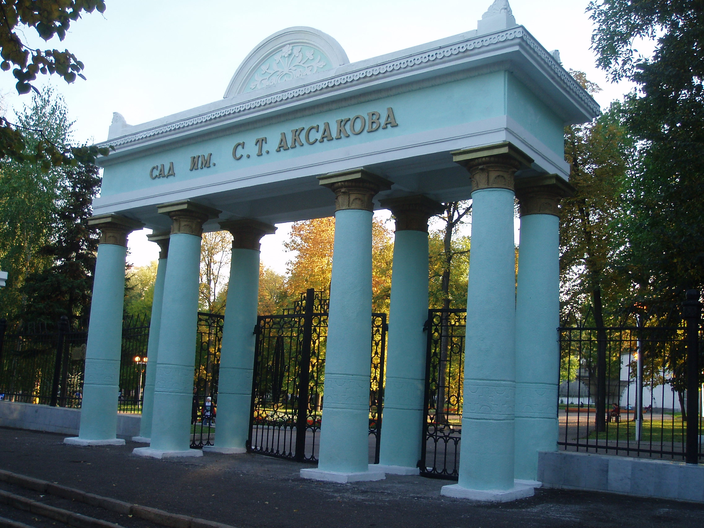
женскую гимназию. Губернатором в то время был сын писателя, Григорий Сергеевич Аксаков. По инициативе жены Григория Аксакова в Уфе был разбит городской сад в квартале, ограниченном ныне улицами Матросова, А.-З. Валиди, Цюрупы и Тукаева; он так и назывался - Софьин сад. В 1861 году на пожертвования в саду был построен первый театр. Он принадлежал женской гимназии. В помещении театра устраивались литературные и музыкальные вечера, идея которых принадлежала Софье Александровне Аксаковой.Мемориальный Дом-музей С.Т. Аксакова (ул. Благоева, 4)
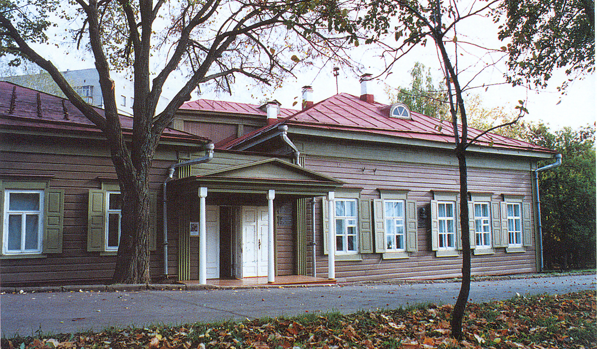
Мемориальный Дом-музей С.Т. Аксакова (филиал Национального музея РБ), представляющий собой образец деревянной архитектуры конца XVIII века, располагается на берегу р. Белой.Дом построен из уральской лиственницы, до настоящего времени сохранилось анфиладное построение комнат. Дом построен в середине ХVIII века, стоит на косогоре. Размер дома - длина по ул. Благоева – 44 м., а по ул. Салавата – 22 метра. Возраст его тоже достаточно солидный – более 250 лет. Здесь с 1795 по 1797 проживала семья писателя. Как «родовое гнездо» уфимский дом Аксаковых известен читателям по книге С.Т. Аксакова «Детские годы Багрова - внука».
Дедовскому дому Сергей Аксаков обязан своими самыми теплыми и светлыми воспоминаниями детства. «Мы жили тогда в губернском городе Уфе и занимали огромный зубинский (зубовский) деревянный дом - говорится на первых страницах книги «Детские годы Багрова-внука», - купленный моим отцом, как я после узнал с аукциона за триста рублей ассигнациями.
Дом был оббит тесом, но не выкрашен; он потемнел от дождей, и вся эта громада имела очень печальный вид. Дом стоял на косогоре, так что окна в сад были очень низки от земли. А окна из столовой на улицу, возвышались аршина на три над землей; парадное крыльцо имело более двадцати пяти ступенек, и с него была видна река Белая почти во всю ширину».
Экспозиция мемориальной части Аксаковского музея, воссоздающая интерьер второй половины XVIII века, знакомит с историей Уфы и Уфимского наместничества, а также с "семейной хроникой" Зубовых-Аксаковых, показывая, как городское окружение, семья и быт формировали духовный мир писателя.
В литературной экспозиции дома-музея представлены материалы, рассказывающие о казанском ученическом периоде жизни С.Т.Аксакова, его театрально-критической деятельности, о творчестве писателя в контексте русской литературы XVIII-XIX веков, его ближайшем окружении. Один из разделов экспозиции посвящен жизни и деятельности Константина и Ивана Аксаковых - идеологов славянофильства.
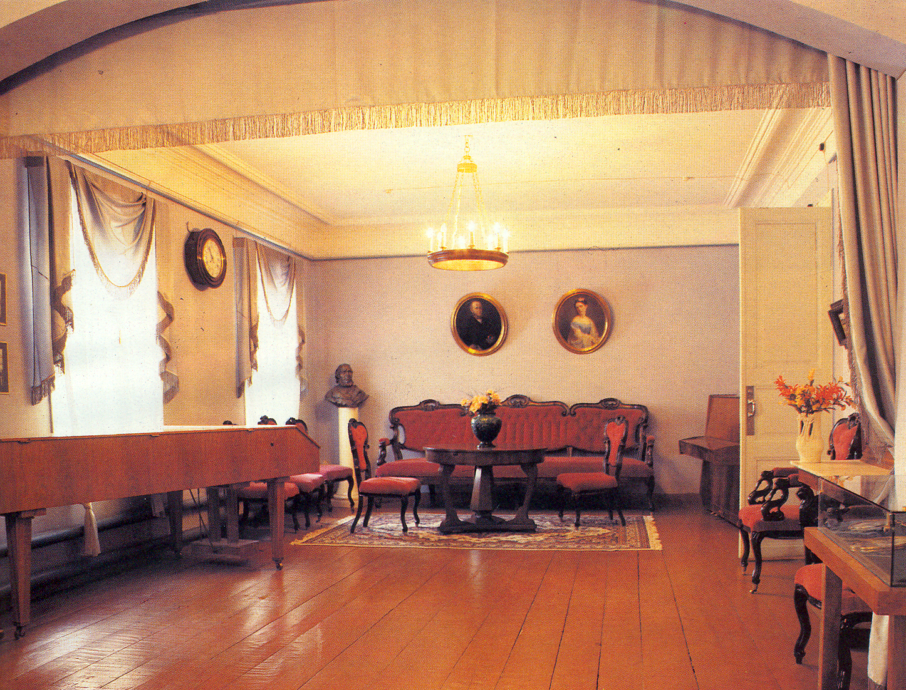 | 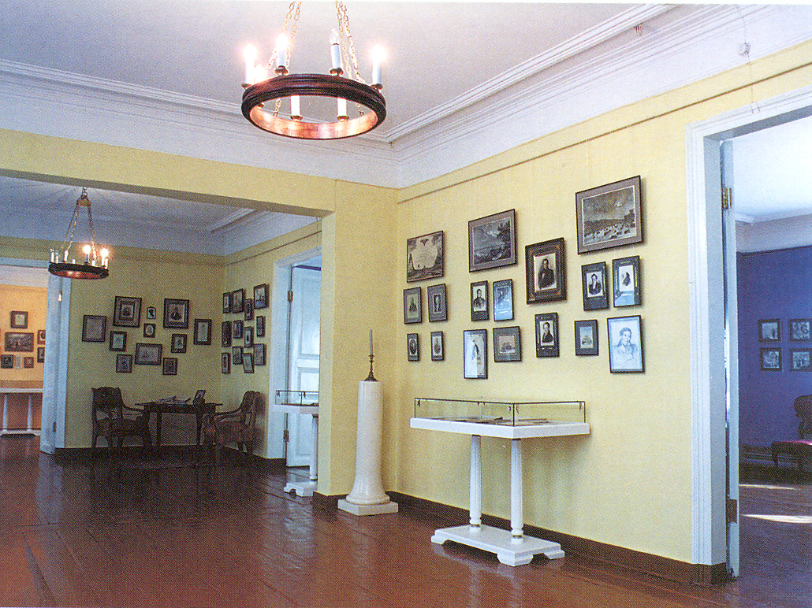 |
В литературно-музыкальной гостиной воспроизведен интерьер губернаторского дома второй половины XIX века. Документальные материалы этого зала связаны с деятельностью сына Сергея Тимофеевича Аксакова - Григория, который в середине 60-х годов был губернатором Уфимской губернии.
До открытия музея в здании размещалась библиотека профсоюза работников просвещения. С конца 1980-х гг. началась реставрация, которая проходила под контролем автора архитектурно-реставрационного проекта З.М. Хатмуллиной. Художественно-экспозиционнный проект выполнили московские художники-архитекторы Е.Н. Лаврова и B.C. Таукина. Сбор экспонатов, изобразительного и литературного материала был осуществлен сотрудниками музея Э.Д. Терегуловой и Т.Е. Замятиной.
В 1991 году, объявленном по инициативе международной организации ЮНЕСКО «годом Аксакова», к 200-летию со дня рождения писателя музей распахнул свои двери для посетителей.
Музейный фонд насчитывает 1583 предмета хранения. За эти годы Мемориальный Дом-музей Сергея Тимофеевича Аксакова стал известным общественно-культурным центром не только в Уфе и Башкирии, но и далеко за пределами России, прежде всего как центр Международного Аксаковского праздника. Ежегодно музей организует Аксаковские дни, научные чтения, выставки, литературно-музыкальные вечера, камерные концерты старинной и классической музыки, праздники масленицы и рождества, аксаковские балы для школьников. Уникальная обстановка и атмосфера Мемориального Дома-музея является подтверждением того особого положения, которое он занимает среди других «аксаковских мест», неразрывно связанных с именем замечательного русского писателя XIX века Сергея Тимофеевича Аксакова.
Музей имеет свой сайт: www.aksakov.info
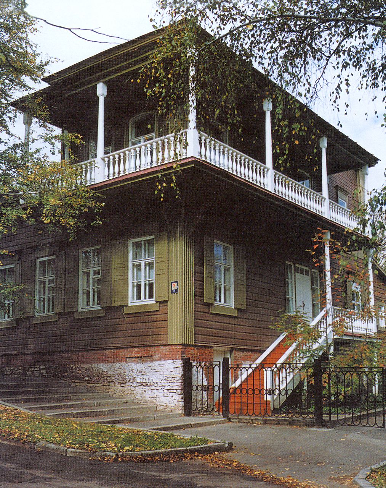
Аксаковский народный дом (угол ул. Ленина и ул. Пушкина)
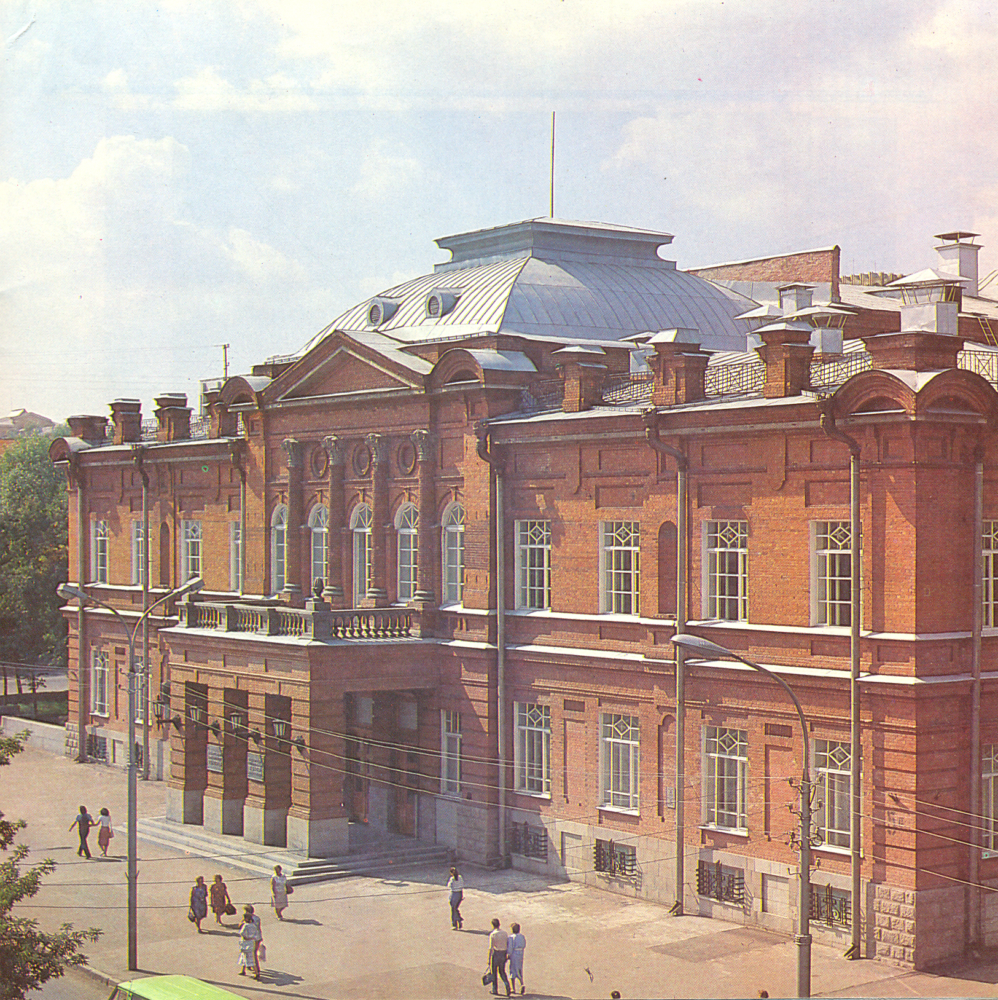
Это единственное в своем роде здание, одно из ярких достопримечательностей столицы, имеет интересную историю. В 1909 году, когда вся Россия отмечала 50-летие со дня смерти великого русского писателя – С. Аксакова, 30 ноября 1908 года Уфимская дума приняла решение: построить в Уфе на добровольные пожертвования Аксаковский народный дом для увековечивания памяти этого замечательного человека. Был объявлен конкурс на лучший проект здания и сбор средств на его сооружение. По России было представлено 24 проекта. Взыскательное жюри отобрало лучший - проект губернского инженера Павла Павловича Рудавского. Интерьер спланировал архитектор Бондаренко. Здание строилось долго – заложили в 1909 г., а достроили только в 1920 г.Аксаковский народный дом по замыслу авторов проекта должен был стать самым большим зданием в городе. В нем предполагалось разместить залы – театральный и для чтения лекций, библиотеку-читальню, музей с тремя отделениями – этнографическим, историческим и географическим, а также аксаковский музей с собранными в нем предметами, имеющими отношение к С.Т. Аксакову. Кроме того, в здании предполагалось разместить и картинную галерею другого знаменитого земляка - Михаила Васильевича Нестерова.
В здании как бы соединились два стиля – если взглянуть с улицы Ленина, то видно, что главенствует русский классицизм, а со стороны улицы Пушкина преобладает мусульманский, восточный стиль (удлиненные прорези окон создают оригинальный вид.)
Об этом писал еще С.Р. Минцлов в своем дневнике «Дебри жизни»: «Стиль его будет занятный: с одной стороны ренессанс, а с другой стороны - восточно-азиатский. Что из такого строительного флюса выйдет – Аллах знает!»
За короткий срок в Уфе было собрано двести тысяч рублей, но этого было недостаточно: для строительства требовалось полмиллиона. Остальные триста тысяч собирали по всей России. Первая мировая война, а затем и гражданская затормозили строительство.
В 1914 году, после начала мировой войны, в Народном доме разместились гимназии и училища, здания которых были отданы под госпитали. Уфимская городская библиотека, получившая название Аксаковской, прежде находившаяся в здании городской думы, переехала в Народный дом, но во время войны вместо библиотеки здесь был размещен военный госпиталь. В конце 1919 года после ремонта Народный дом был открыт. На одной и той же сцене «по очереди выступали драматическая и оперная труппы», здесь же находился театр кукол. С 1928 года в здании располагался Дворец труда, потом, с 1938 года, Башкирский государственный театра оперы и балета. В середине 80-х годов ХХ века в театре прошла реставрация.
На сегодняшний день это здание по улице Ленина,5, безусловно, является одним из красивейших в городе.
В связи с 200-летием со дня рождения С.Аксакова дому возвращено его первоначальное название – Аксаковский дом.
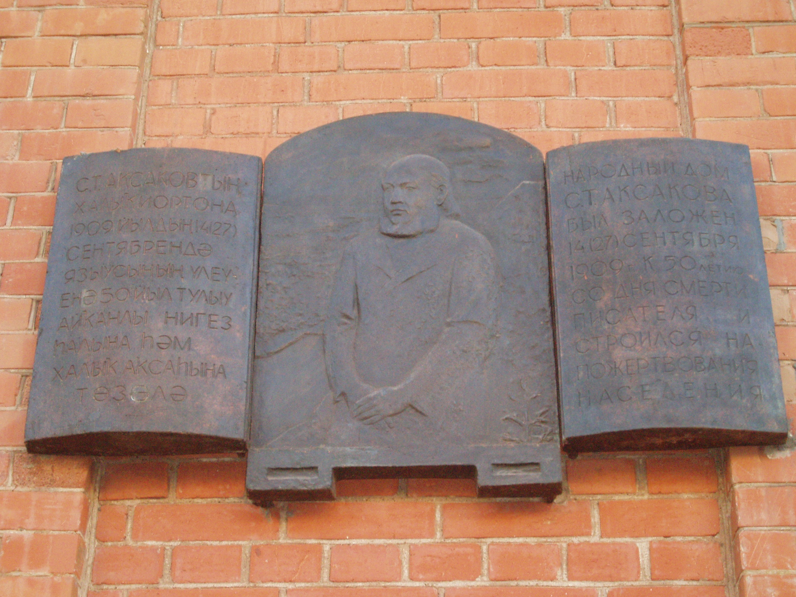
Бюст С.Т. Аксакова на ул. Пушкина
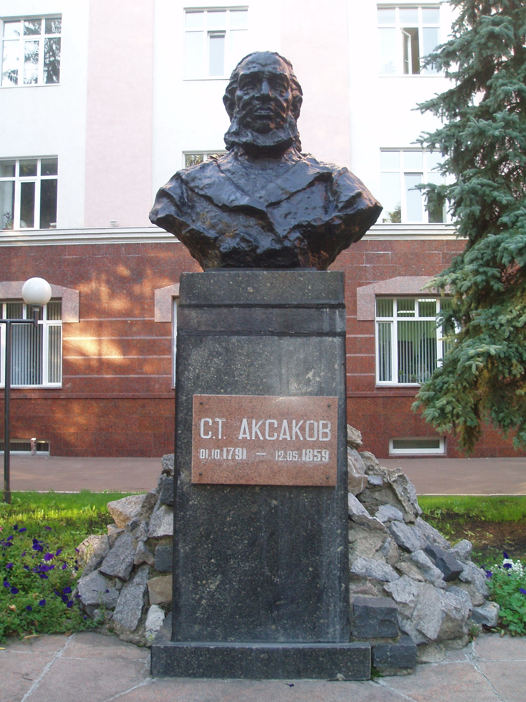
Памятник русскому писателю, уроженцу Уфы, открыт 12 мая 1959 года в сквере по улице Пушкина, у стен Башкирского государственного театра оперы и балета. Он создан по инициативе Башкирского отделения Союза художников к 100-летию со дня смерти Аксакова. Памятник сооружен по проекту архитектора Кондрашкова В.А. Скульптурное изображение – произведение скульптора Нечаевой Т.П. Памятник отлит из бронзы. Пьедестал – железобетонный, облицован серым гранитом. У подножия памятника – декоративный камень, имитирующий уральские скалы. На сером полированном граните пьедестала – накладные металлические буквы «С.Т. Аксаков. 1791 -1859».
Улица Аксакова
Улица старинная, историческая, первоначальное название – Каретная улица (по расположенным в ней каретным мастерским). На рубеже ХIХ и ХХ веков она была переименована в Аксаковскую улицу в честь Сергея Тимофеевича Аксакова, русского писателя, родившегося в г. Уфе и посвятившего городу и краю немало своих книг. На двух разных картах Уфы 1897 года есть и первое, и второе ее название.
На улице расположены Музей археологии и этнографии БГУ, дом штурмана Альбанова, общежития Башкирского государственного университета, дом Бухартовского (Генрих Генрихович Бухартовский, главный помощник Уфимского губернатора, в Аксаковском комитете занимался сбором денег на строительство Аксаковского народного дома), здание следственного изолятора (Уфимская губернская тюрьма) и др.
Множество зданий, находящихся на этой улице, хотя и не причислены к памятникам архитектуры, имеют несомненную историческую и культурную ценность. Типичными образцами двухэтажных деревянных домов к. ХIХ и начала ХХ в.в. является дом № 42 с элементами модерна – большими окнами с характерными наличниками и накладной резьбой. Дом № 49 связан с именами писателей П. И. Добротворского и В.Г. Короленко.
Аксаковский сад (ул. А. Пушкина)
Сад им. С.Т. Аксакова находится на улице Пушкина. На улице Голубиная слободка (ул. Пушкина) когда-то стоял домик, купленный матерью Сергея Тимофеевича, где Сергей родился и провел свои детские годы. Усадебный дом стоял рядом с современным входом в сад со стороны ул. Пушкина, сгорел в 1821 году. На месте усадьбы позднее был разбит парк, поменявший за полтора с лишним века несколько владельцев и названий. Как общественный сад он был заложен на пожертвования купца Н. Блохина в 1833 году. В саду было много качелей, каруселей, деревянный летний театр, сгоревший в 1893 году.
В 1894 году уфимский заводчик В.Видинеев, перекупивший этот сад, построил в нем новое двухэтажное деревянное здание театра. По имени владельца его называли Видинеевским театром. Это было внушительное сооружение, на 794 места. Зал был уютный, многоярусный, акустика прекрасная. В декоративном оформлении фасада широко использовалась деревянная резьба. Зрительные места располагались в три яруса, второй и третий из них соединялись открытыми галереями, выходящими в сад. Автор проекта неизвестен.
Этот театр долгие годы был центром культурной жизни города. В здании летнего театра выступали заезжие знаменитости – так в 1895 году на сцене выступила А. Яблочкина, будущая народная артиста СССР, а также выдающиеся деятели искусства, литературы и науки. Здание театра простояло на территории сада до 1991 года, когда, несмотря на протесты горожан, был снесено.
В 20-е годы сад, расположенный на месте бывшей усадьбы Аксаковых стал носить имя наркома просвещения СССР А.В. Луначарского. В 1938 году был очищен пруд, построена танцевальная площадка. Гуляния и танцы не отменялись даже в годы Великой Отечественной войны. Вход в парк был платный, поэтому днем гуляющих было мало. Работали павильон-читальня, бильярдная, ресторан, на эстраде ежедневно давались концерты. Здание ресторана, как и театра, было деревянным – еще видинеевским – и открывалось только на лето. Зимой на озере работал каток.
В 1955 году был построен новый главный вход в виде арки с колоннами (архитектор С. Г. Калимуллин) и установлена металлическая изгородь. Тогда же появилась площадка для аттракционов, комната смеха, киноплощадка и фонтаны. В саду установили популярные в те годы гипсовые скульптуры.
В 1992 году, в связи с 200-летием со дня рождения С.Аксакова, парк получил современное название. В саду была проведена реконструкция.
Тогда же на месте дома, где родился писатель, был установлен мемориальный памятный знак.
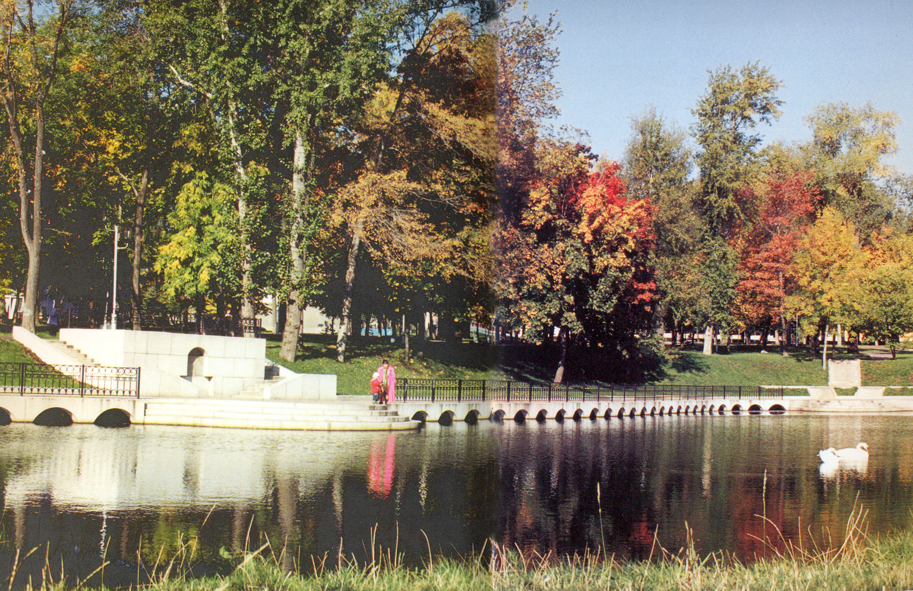
Мемориальный знак
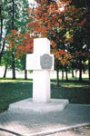
Дом в бывшей Голубиной слободке (ул. Пушкина), где родился и жил будущий писатель, не сохранился. После свадьбы (в мае 1788 г.), на деньги, выделенные ее отцом, мать С.Т. Аксакова Мария Николаевна, купила дом Веселовских в Голубиной слободе (на территории нынешнего сада им. С.Т. Аксакова), где семья прожила несколько лет. Дом этот сгорел во время пожара в 1821 г. Вокруг него был огромный липовый сад и несколько прудов. Последняя столетняя липа этого сада была уничтожена в начале 1990-х годов.На месте бывшего дома в 1991 году установили памятный мемориальный знак из серого гранита высотой 3 метра. В средней части крестообразной формы - барельеф писателя из бронзы и надпись: «Здесь родились 20 сентября (1 октября) 1791 года Сергей Тимофеевич Аксаков и 18 (29) мая 1794 года его сестра Надежда Тимофеевна Карташевская». Надписи на русском и башкирском языках.
«Аленький цветочек» - символ любви
«Аленький цветочек» из одноименной сказки Сергея Аксакова появился в Уфе, в саду, носящем имя этого русского писателя. Цветок, правда, из металла, да и чудовища – одного из главных персонажей сказки – рядом нет. Авторы скульптуры считают, что эта скульптура – символ любви.
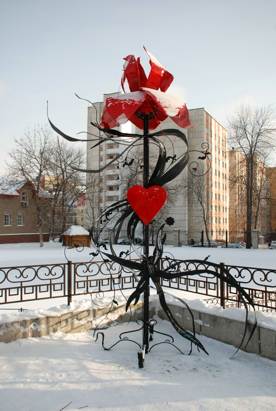
Работа над гигантским цветком шла полтора месяца. Авторство и разработка скульптуры принадлежит директору строительной компании Наиле Майоровой.
«Волшебный цветочек полностью сделан из металла, поскольку этот материал очень пластичный и хорошо куется. На «стебле» цветка расположено сердце с отпечатками ладоней, чтобы, приложив к ним руки, любящие пары, таким образом, скрепляли свои чувства, и чтобы их никогда не покидало счастье», – говорит Майорова.
Высота самой скульптуры четыре метра, а ярко-красный бутон с внутренней стороны подсвечивается нежно-белым светом. Создатели собираются еще дополнительно украсить его светящимися сердечками или звездочками.
Цвета этой композиции – красный и черный – тоже выбраны не случайно. По словам автора Майоровой, «этим выбором хотелось показать, как из темных глубин человеческой души разгорается яркое неугасимое чувство. Влюбленным парочкам Цветок поможет укрепить их чувства, а одиноким сердцам найти свою половинку».
У уфимских молодоженов теперь появился новый ритуал. Свою любовь они смогут скреплять не только замочками на висячем мосту, но и приложив ладошки к бьющемуся сердцу Аленького цветочка. Уфимцы приходят полюбоваться новым творением и с удовольствием фотографируются. Создатели его верят, что настоящая любовь, которая была у главной героини сказки Настеньки и которая смогла вернуть человеческий облик страшному чудищу, будет сопровождать влюбленных всю жизнь.
Дом губернатора (ул. Тукаева)
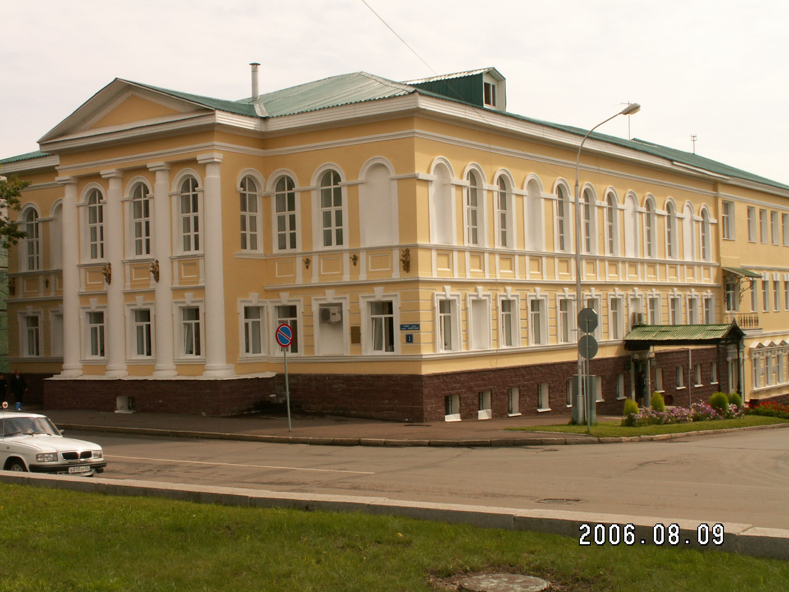
С 1860 года в нем жил сын писателя Григорий Сергеевич Аксаков. Его жена Софья Александровна прославилась своей благотворительностью. Его дочери Ольге (1848 г. рождения) Сергей Тимофеевич посвятил повесть «Детские годы Багрова-внука» и сказку «Аленький цветочек». Ныне в этом доме располагается Министерство здравоохранения Республики Башкортостан.Парк на Случевской горе
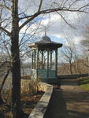
Ныне это парк им. Салавата Юлаева. Отсюда, с высокого берега Белой, любовалась широко простирающимися далями мать писателя Мария Николаевна Аксакова (урожденная Зубова). Отсюда же маленький Сережа наблюдал ледоход и широкий разлив реки Белой по весне.Памятный аксаковский знак
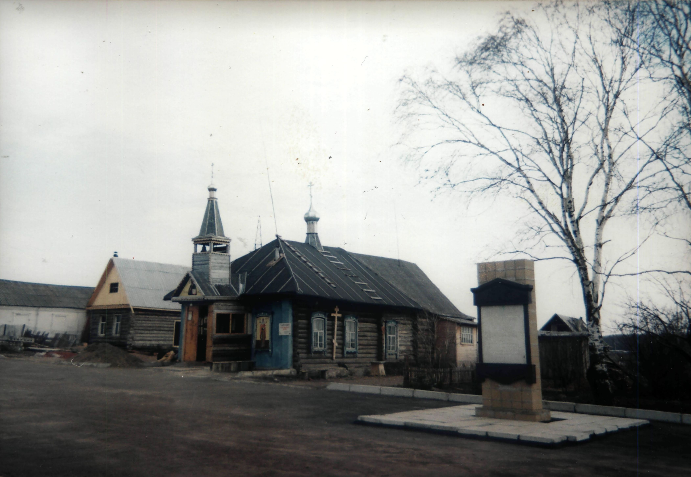
В 1991 году в канун 200 – летней годовщины со дня рождения С. Т. Аксакова в Уфимском микрорайоне Шакша (ранее село Никольское, или Касимово, бывшее имение деда Сергея Аксакова Н. С. Зубова) был установлен памятный аксаковский знак, выполненный уфимским скульптором В. Г. Любановым.Аксаков на сцене
Камерный театр (арт – кафе – «Аленький цветочек») расположен на территории парка им. С. Аксакова. Несмотря на небольшую площадь, театр пользуется успехом у публики. В дни Аксаковских праздников и народных гуляний камерный театр представляет своим маленьким зрителям кукольный спектакль по знаменитой сказке С.Т. Аксакова. «Театр живет в небольшом пространстве, и соразмерно ему сделаны сцена, декорации, куклы. В зале всего 50 мест. Зритель сидит совсем близко к артистам, непосредственно общается с ними и сам становится участником спектакля. Актеры сильно не напрягаются, а энергетики отдают больше», - рассказывает Андрей Волков, режиссер, художник-постановщик и конструктор кукол, а также ответственный за музыкальное и световое сопровождение представления.
Сказку Сергея Тимофеевича Аксакова "Аленький цветочек" поставил известный петербургский театральный художник, обладательница трех "Золотых масок" Алена Торик.
Аксаковская гимназия № 11
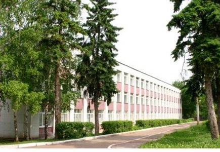
Аксаковская гимназия открыта на базе старейшего учебного заведения Башкирии и Оренбургского края - средней школы №11 города Уфы - Указом Президента Республики Башкортостан «Об Аксаковской школе-гимназии в городе Уфе» 20 сентября 1995 года. Она является правопреемницей Уфимской мужской гимназии, основанной в 1828 году.«11 ноября 1828 года состоялось торжественное открытие Уфимской гимназии, в этот день сели за парты первые 15 учеников». Так начиналась история Уфимской гимназии, описанная преподавателем Поликарповым в 1903 году в связи с 75-летием гимназии.
В 1844 году при гимназии был открыт пансион «...для облегчения образования детей дворян и чиновников» первоначально на 20 казенных стипендиатов. Лучшим пансионерам по окончании курса учебного заведения давалось направление для поступления в университет. Число пансионеров колебалось от 24 до 46 человек.
Уфимская гимназия стала давать общее среднее образование классического направления. В нее принимались выходцы из всех сословий в возрасте 10 лет после специальных вступительных экзаменов. Гимназист, прошедший полный курс обучения, получал право поступления в университет и льготы при присвоении первого классного чина.
Гимназия занимала совершенно особое место в развитии просвещения и культуры города. Она являлась не только школой, но и как бы местным научным центром. Ее учителя составили первую библиографию Башкирии, написали ряд работ по истории, этнографии и географии местного края, они же организовали здесь первые научно поставленные метеорологические наблюдения.
Гимназия славится своими выпускниками, получившими в разное время известность не только в Башкортостане, но и далеко за его пределами. Поэт М.Л.Михайлов, историк русской культуры, академик П.П.Пекарский, отыскавший один из списков «Слова о полку Игореве», академик геолог А.Н.Заварицкий, писатель И.В.Авдеев, великий русский художник М.В.Нестеров, полярный исследователь В.И.Альбанов, на дневниках которого основан роман В.Каверина «Два капитана», ректор Казанского университета профессор Н.М.Любимов, создатель глазной клиники в Уфе профессор В.П.Одинцов, академик ботаник П.Н.Овчинников, директор института ядерной физики им. Иоффе В.М.Тучкевич. Сегодняшние журналисты В. Карамашева, Ю. Дерфель, В. Голов, солистка Башкирского театра оперы и балета, заслуженная артистка России Эльмира Ахметзарипова, заслуженная артистка России, солистка Башкирской государственной филармонии Лидия Нагаева- тоже питомцы 11-ой школы-гимназии. Только за последние 50 лет школа выпустила в жизнь 77 докторов наук, 182 кандидата наук, 40 лауреатов Государственных премий. Более 200 человек закончили школу с золотыми и серебряными медалями.
Сегодня учителя делают все, чтобы учащиеся знали и любили свою гимназию, ее историю, воодушевлялись благородными примерами ее известных выпускников, помнили ее всю жизнь. Особое место в учебно-воспитательной работе занимает музей «Истории школы», созданный энтузиастом краеведения, заслуженным работником культуры Башкирии Еленой Никуличевой, долгие годы отдавшей краеведению, воспитавшей не одно поколение в духе любви к родине, к Башкирии, к Уфе. Экспонаты музея уникальны.
Краеведы ведут большую поисковую работу: ежегодно организуются поездки по Аксаковским местам. Ежегодно гимназия встречается с гостями Международного Аксаковского праздника.
В гимназии под руководством ученых разработаны и апробированы спецкурсы, расширяющие кругозор учащихся, формирующие русское национальное самосознание: «Живое слово древней Руси», «Русские святыни и православие», «Духовное и литературное наследие семьи Аксаковых», «Родословие», «Народные ремесла. Промыслы. Прикладное искусство», «Художественная культура Башкортостана», «Россия и Башкортостан: культурно-национальное и экономическое взаимодействие».
В гимназии действуют кружки резьбы по дереву, ковроткачества, народной вышивки, фольклорные ансамбли. Традиционными стали в гимназии Аксаковские праздники, Дни славянской письменности и культуры, праздники «Вечный круг календаря».
В 2007 году была разработана авторская программа факультативного курса для учащихся 6-7 классов гимназии «Духовное наследие семьи Аксаковых». Автор: Н.Ф. Михайлова.
Одним из важных направлений работы Аксаковской гимназии является экологическое воспитание школьников. Ребята изучают природу и историю своего края, участвуют в конкурсах, экспозициях, выступают на научно-практических конференциях.
Аксаковская гимназия имеет собственный гимн, авторами которого стали С.А. Жданова и А.А. Любименко:
Храни огонь родного очага,
Традиции любимого народа.
Аксаков имя дал нам на века.
Свершить нам в жизни надо очень много!
Гимназия! Гимназия!
Любимая гимназия моя!
Гимназия! Гимназия!
На знаньях наших держится земля.
Мы русские березки бережем,
Славянскую культуру прославляем,
Мы наши песни вольные поем,
Любуясь красотой родного края.
Аксаковская гимназия создает устойчивые связи с другими национальными школами: 114-ой города Москвы, гимназией «Иван Аксаков» в городе Пазарджик Болгарии, отметившей в 1998 году свое 100-летие. Аксаковская гимназия поддерживает дружеские и творческие связи с Осиновской школой Бирского района, с Зубовской школой Уфимского района, школой № 88 города Уфы.
Лучшие учащиеся аксаковской гимназии за успехи в учебе, общественной жизни, за призовые места в различных соревнованиях и олимпиадах награждаются Аксаковскими премиями и стипендиями. Имена лучших учащихся заносятся в Почетную книгу гимназии.
Уникальность Аксаковской гимназии состоит в ее многонациональности: в ней обучаются дети более 30 национальностей. Располагаясь в старой части Уфы рядом с двумя православными храмами - Сергиевским Собором и Покровской церковью, гимназия остается верна своим исконным духовным традициям.
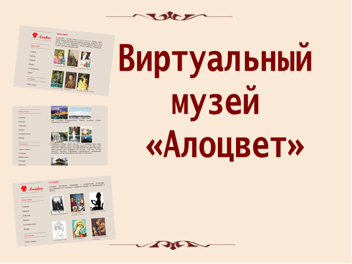
2004 году искусствоведом С.Соболевской и художником Н.Куприяновым был разработан проект сайта «Алоцвет».
25 января 2005 года сайт был введен в пространство Интернета по адресу alocvet.narod.ru. В середине июня 2005 года он был зарегистрирован в общероссийском портале «Музеи России» как виртуальный музей «Алоцвет».
Здесь загадочная история создания сказки, в библиотеке музея собраны сказки и научные статьи о них, в галерее – иллюстрации и репродукции картин, представлены также детские рисунки.
В разделе новостей вы можете узнать о событиях, связанных с именем С.Аксакова и проходящих в городе.
Все желающие могут совершить виртуальную прогулку по аксаковским местам г. Уфы.
Адрес сайта в Интернете: http://alocvet.narod.ru/
Амантай Габдулла
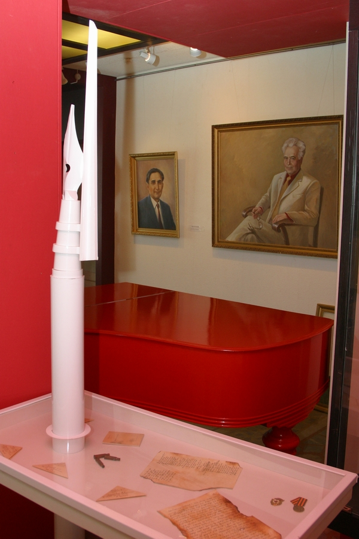 | 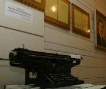 |
Материалы из экспозиции в Краеведческом музее РБ
23 декабря 2007 года в Уфе было торжественно отмечено 100-летие со дня рождения писателя и поэта Абдуллы Гареевича Амантаева.
В Уфе, на доме № 2 по улице Ленина, на белом мраморе золотом выбит текст: «В этом доме в 1933-1937 годах жил видный башкирский поэт, ученый и общественный деятель Габдулла Амантай (1907-1938)».
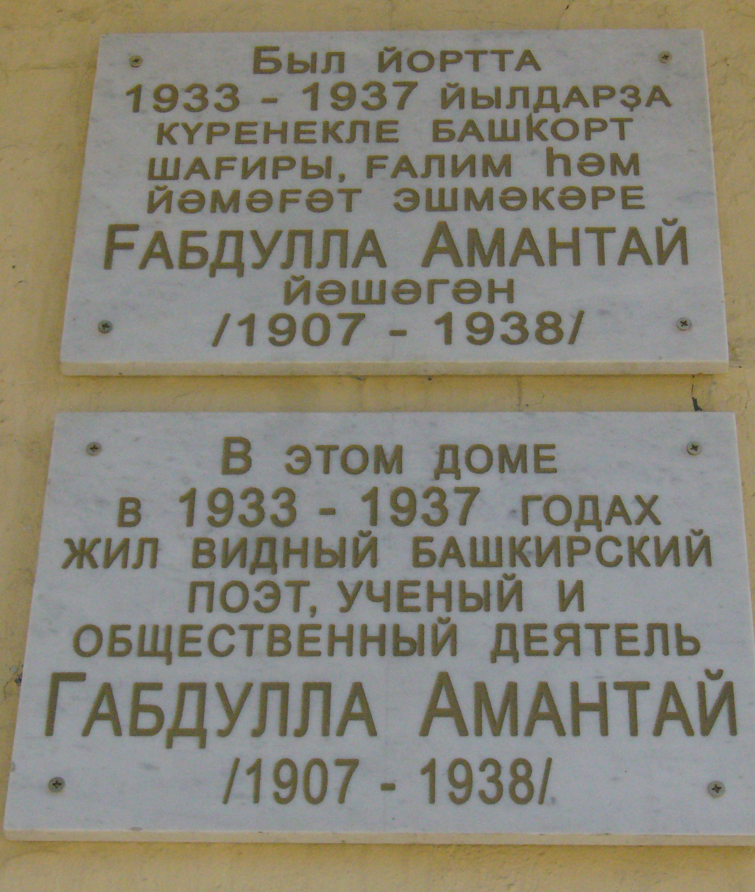 | 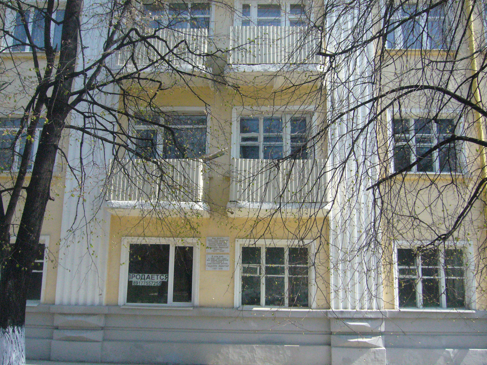 |
Баязит Бикбай
Улица Баязита Бикбая
В Уфе есть улица Баязита Бикбая. Это самая первая улица микрорайона Сипайлово, названная в честь знаменитого писателя Башкортостана в 1984 году. Вот как вспоминает об этом времени главный инженер Управления капстроительства города Владимир Васильевич Унжаков: «Достраиваются первые дома, в них уже готовятся въехать новые жильцы. Я захожу к тогдашнему главному архитектору РСФСР Фариту Измайловичу Рехмукову и говорю: «Обо всем подумали? А вот и нет! А улицы-то как назовём?» Он схватился за голову: «И в самом деле». Стали думать. Я высказал мнение, что в новом микрорайоне должны быть улицы, носящие имена видных писателей, героев войны, космоса. И первой такой улицей стала улица Баязита Гаязовича Бикбая (Баязита Бикбая). Это предложение по наименованию первой сипайловской улицы было вынесено на сессию Горсовета и утверждено в установленном порядке». В татарской гимназии № 84, расположенной на улице имени Баязита Бикбая создан краеведческий музей, где часть экспозиции посвящена писателю.
9 мая 2005 года в день празднования 60-летнего юбилея Победы, в сквере на пересечении улиц Маршала Жукова и Бикбая был открыт памятник Георгию Константиновичу Жукову. Он состоит из двух частей: белого гранитного пьедестала высотой 2,2 м и весом в 2,5 тонны и бронзового бюста. Общая высота скульптуры составляет 3,5 м, пьедестал был изготовлен из гранита мастерской «Уральские камни» (г. Учалы). В этом уютном сквере жители Сипайлова любят проводить своё свободное время, а сипайловские школьники к празднику Победы возлагают цветы к мемориалу героя.
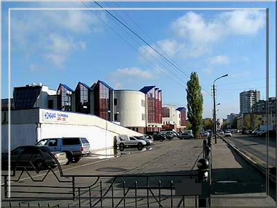
Улица имени Баязита Бикбая
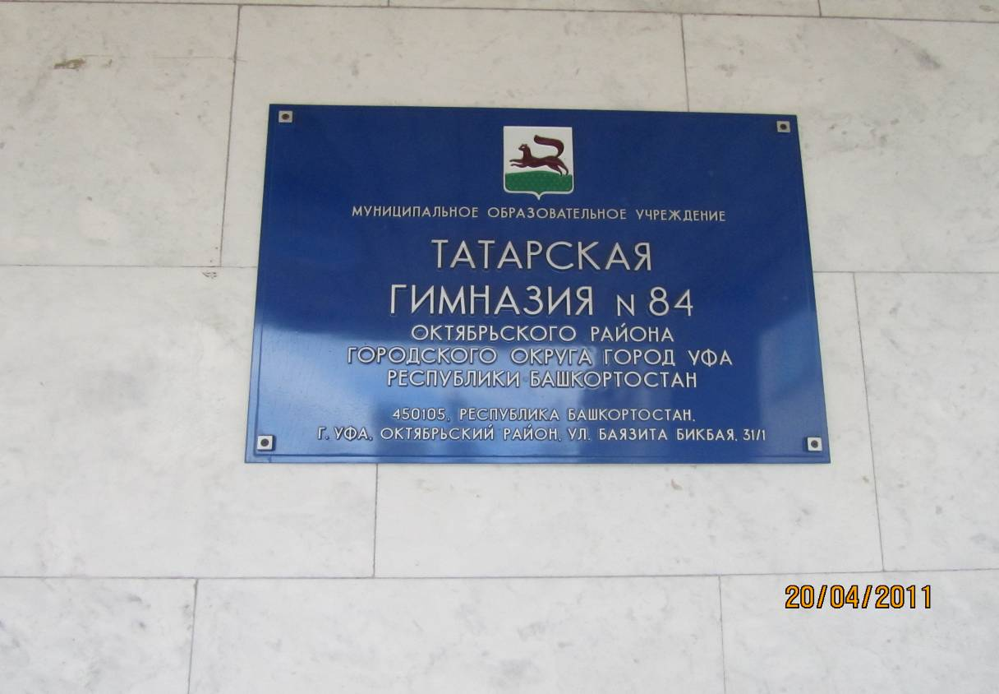
Татарская гимназия № 84 на улице Б. Бикбая
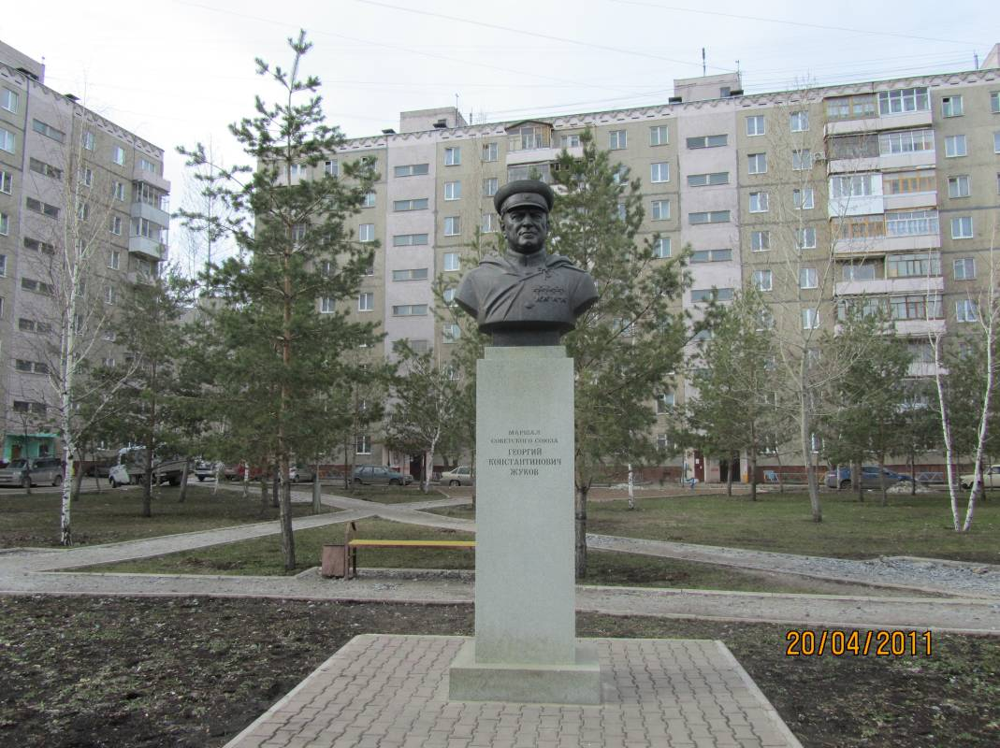
Сквер маршала Жукова на улице Б. Бикбая
МЕМОРИАЛЬНАЯ ДОСКА
В память о писателе на доме № 47 по улице Ленина в Уфе установлена мемориальная доска, которая на башкирском и русском языках напоминает: «В этом доме в 1959- 1968 гг. жил видный писатель, лауреат премии Башкирской АССР имени Салавата Юлаева, заслуженный деятель искусств республики Баязит Бикбай».
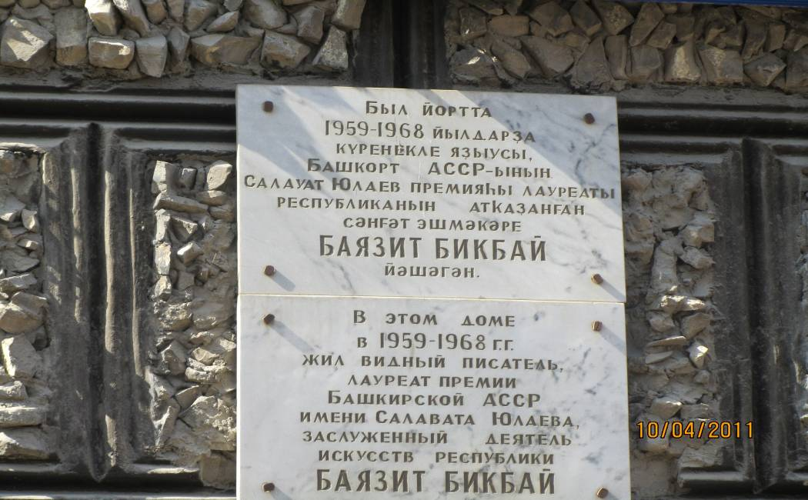
Мемориальная доска на Ленина, 47
Музей в подростковом клубе
В подростковом клубе «Ника» действует музей микрорайона Сипайлово, где рассказывается об улицах, в том числе, об улице Баязита Бикбая и о его творчестве. Школьники микрорайона пишут сочинения, посещают театральные спектакли, поставленные по его произведениям, возлагают цветы к обелиску на могиле писателя в памятные даты.
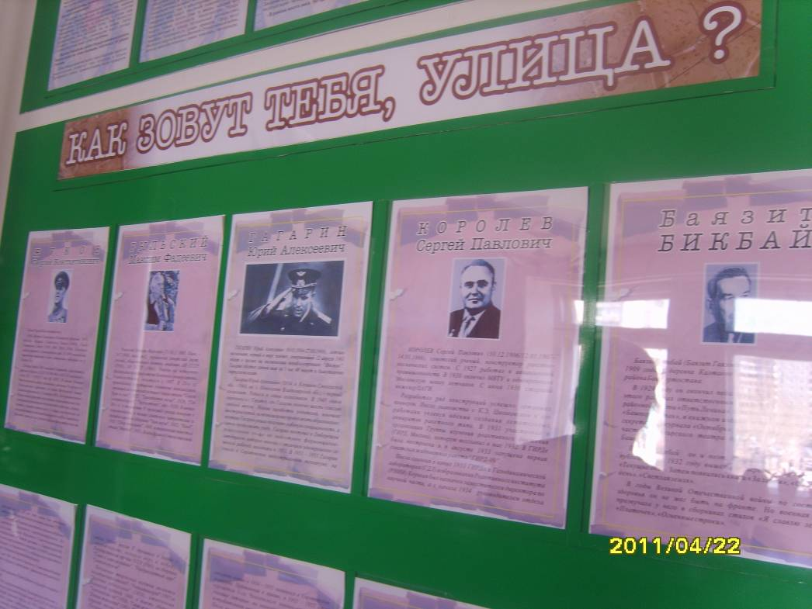
В краеведческом музее подросткового клуба «Ника»
Место захоронения
Могила башкирского писателя Баязита Бикбая находится на Мусульманском кладбище. На могиле установлен обелиск из серого шлифованного гранита высотой 1,3 м, шириной 0,5 м. В верхней части обелиска находится фотография на керамике, ниже в граните выбита эпитафия на башкирском языке.
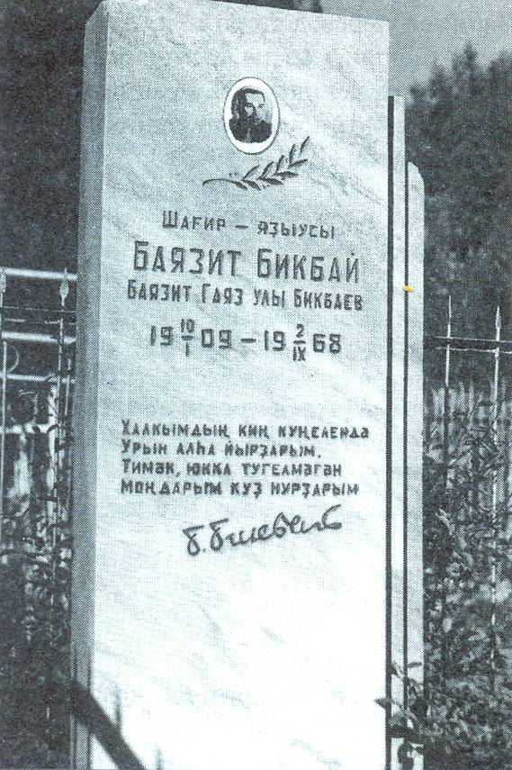
Памятник на могиле Баязита Бикбая
Бикчентаев Анвер Гадеевич
Дома, где жил Анвер Гадеевич Бикчентаев до 1956 года, указаны по воспоминаниям его сестер – Сании и Салисы Бикчентаевых.
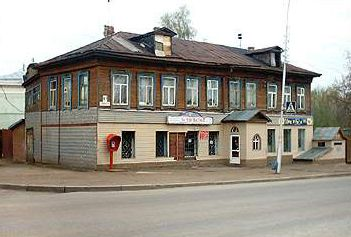
Дом по ул. Коммунистической, 107, где семья Бикчентаевых жила после войны (сгорел, на его месте посадки деревьев).

Дом по ул. Цюрупы (во дворе между улицами Коммунистическая и Чернышевского), где А. Бикчентаев жил в 1940-х годах.

Дом по ул. Коммунистическая, 43, где Анвер Гадеевич жил в начале 50-х годов на третьем этаже. Ребята из этого дома – герои повести Бикчентаева «Большой оркестр».

Дом по ул. Достоевского, 73 – последний адрес А. Бикчентаева. В этом доме до сих пор проживает его семья.
Мемориальная доска

Мемориальная доска на доме по ул. Достоевского, 73, где Анвер Бикчентаев жил до 1989 года.
Мусульманское кладбище Уфы, где похоронен Анвер Бикчентаев.

Памятные места Уфы, связанные с журналистской и писательской деятельностью Анвера Бикчентаева
Анвер Бикчентаев работал и публиковался в газетах «Советская Башкирия», «Ленинец», был членом Союза писателей РБ, состоял в его Правлении. В 1958 году он представлял республиканскую литературу на выездном пленуме Союза писателей РСФСР в Уфе.
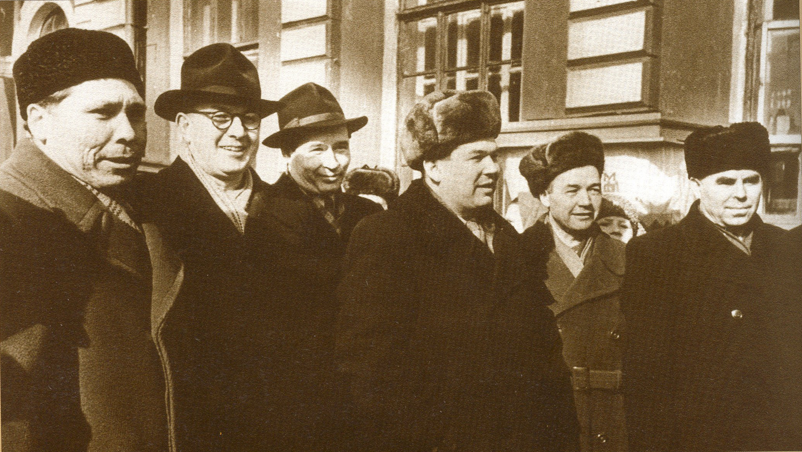
Здание по адресу: ул. Коммунистическая 43, где в середине 20 века размещалась редакция газеты «Ленинец».
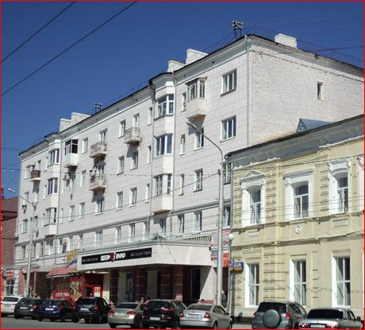
Здание по адресу: ул. Карла Маркса, 25, где в середине 20 века размещалась редакция газеты «Советская Башкирия».
Здание по адресу: ул. Коммунистическая, 34, где находится Правление Союза писателей Республики Башкортостан.

Уфимские страницы книг Бикчентаева
«Уфимские страницы книг Бикчентаева»: места в Уфе, связанные с героями книг «Большой оркестр», «Семь атаманов и один судья» и «Орел умирает на лету» (на карте Уфы отмечены зелеными звездочками).
«Однажды, когда я писал предисловие к «Большому оркестру», я сделал для себя интересное открытие. Оказалось, что я прекрасно знаю тот двор, о ребятах которого написана книга. Это был двор, на который выходили окна редакции, где я потом работал.
После этого открытия я просмотрел заново роман «Лебеди остаются на Урале», повести «Дочь посла» и «Адъютанты не умирают», сборник рассказов «Бакенщики не плачут» и увидел, что все эти во многом романтические истории накрепко привязаны к определённому месту. Хорошо сказались неписательские дороги на книгах маститого писателя!»
Рамиль Хакимов.
«Большой оркестр»
 Бикчентаев, А. Г. Большой оркестр [Текст] : повесть / А. Г. Бикчентаев. – М.: Дет. лит., 1983 . – 144 с.: ил.
Бикчентаев, А. Г. Большой оркестр [Текст] : повесть / А. Г. Бикчентаев. – М.: Дет. лит., 1983 . – 144 с.: ил.
Эта книга недаром выдержала десятки переизданий на разных языках и в разных странах: появившись на свет в 1957 году, она и сейчас любима детьми и взрослыми. Взрослые, перечитывая «Большой оркестр», с головой окунаются в своё солнечное детство – благодатные годы, когда послевоенная разруха уже в прошлом, и все пути к счастью открыты. А ребят неизменно увлекают непростые взаимоотношения, переживания, приключения героев книги – таких непохожих, разных и по возрасту, и по характеру, и по национальности, и по воспитанию и «социальному происхождению», но в итоге ставших близкими и необходимыми друг другу.
Мальчишки и девчонки из обычного уфимского двора живут удивительно полной жизнью – играют, учатся, мечтают, дерутся, ссорятся и мирятся, помогают друг другу и взрослым, попадают в неприятности и стараются с честью выходить из них… Скучать некогда! Главное: здесь неважно – чей ты сын, кто русский, кто башкир или татарин, у кого папа инженер, у кого мама – дворник… Лишь трусость, подлость и жадность неприемлемы в «Большом оркестре», где каждый герой необходим, как музыкант, ведущий свою партию. Маленький, но мудрый Мансур, от лица которого ведётся повествование, приходит к выводу: «Да, наверно, это хорошо, что мы разные. Только нужно уважать друг друга и, как говорит моя мама, не делить на части общее добро: труд, небо и солнышко…» Актуально, не правда ли? Вот и весь секрет всеобщего благоденствия. А секрет нестареющей книги А.Г. Бикчентаева – талант и огромная любовь к детям, к своей стране и родному городу.
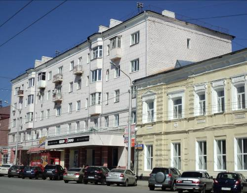
Дом по ул. Коммунистическая, 43, где в начале 50-х годов жили герои книги «Большой оркестр и сам писатель.«Наш двор со всех сторон окружён каменными и деревянными постройками. …Половину двора занимает молодой сад со спортивной площадкой, клумбами и скамейками. Справа – три новых гаража. В глубине двора стоит длинный сарай, разделённый перегородками по количеству квартир. В нашем доме, кроме магазина, целых 18 квартир. (С. 9.)
Сад им. Салавата Юлаева
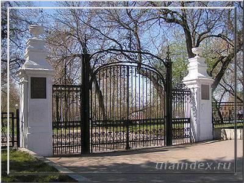
«Наша группа отправилась на окраину города, на крутые склоны гор, где ещё лепились старые низенькие дома. Мы долго бродили по узким улочкам и неровным переулкам. …Окончательно устав и не найдя дома Аксакова, мы решили зайти в сад имени Салавата Юлаева, чтобы перекусить». (С. 62)
Улица Коммунистическая и сквер Ленина
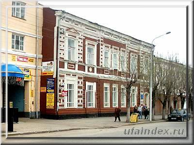
«Если вы никогда не бывали в Уфе, расскажу вам, куда мы пошли. Как только выйдешь из нашего дома, надо завернуть налево, то есть идти по Коммунистической улице. Она у нас центральная. Липами и тополями обсажена. И канавки есть, где мы хотели создать арыки. Дальше идёшь мимо швейной фабрики, мимо типографии и около Ленинского садика сворачиваешь направо.
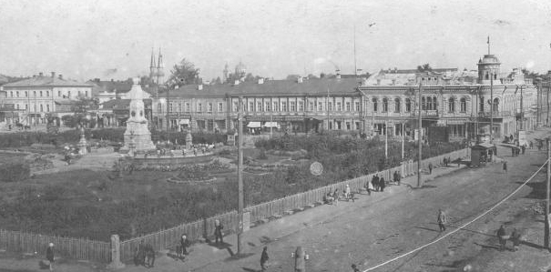
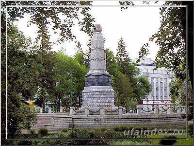
В нашем городе давным-давно бывал Ленин, по пути из ссылки заезжал. Наверное, захотел посмотреть на то, как уфимцы живут, и с революционерами поговорить. Одним словом, на том месте, где Ленин любил бывать, памятник поставили и сад развели» (С.109)
«Семь атаманов и один судья»
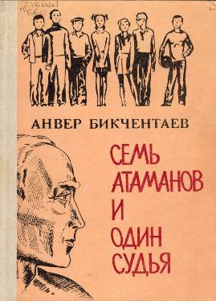
Бикчентаев, А. Г. Семь атаманов и один судья [Текст] : рассказы / А. Г. Бикчентаев. – Уфа: Башк. кн. изд-во, 1980 . – 239 с.: ил.«Ты смеёшься этой басне? Но замени в ней лишь имя – и увидишь, что речь идёт о тебе», - так сказал Гораций»… Такой эпиграф предпослал своей повести А.Г. Бикчентаев. А значит, речь в ней идёт обо всех нас; о том, что может произойти с каждым.
Дружная компания из семи мальчишек и девчонок живёт на одной улице, на самом берегу реки Белой. Отец братьев Азамата и Самата утонул в ледоход, спасая человека. Азамат в свои двенадцать лет остаётся до приезда бабушки за хозяина дома. Неожиданно объявляется «фронтовой друг отца» - добрый и щедрый дяденька. Пока Азамата терзают подозрения – а тот ли, за кого себя выдаёт, странный гость? – уголовник со стажем сколачивает из подростков шайку и ведёт «на дело»… Брата ждёт суд и колония. Кто же придёт на помощь растерявшимся подросткам?
Как хорошо, если в час испытаний тебя поддержат истинные друзья и взрослые неравнодушные люди, придут на помощь не только по долгу службы, но и по зову сердца. Взросление подростков, становление характера, взаимоотношения со сверстниками и взрослыми – вечные темы, важные во все времена.
Окраинная улица (Набережная Белой, район Телецентра) – место жительства героев
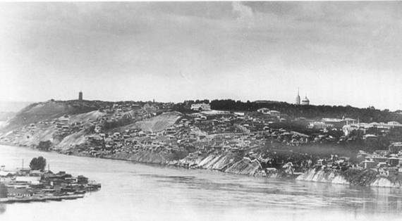
«Тропка, по которой они шли, время от времени забегала в узкие переулки, петляла почём зря. То она внезапно уходила в глубокие овраги, то взбиралась на самую крутизну. А с той крутизны, где ты чуть-чуть задержался, чтобы перевести дух, открывался вид на сорок километров вокруг. А то и больше… весь мир, казалось, лежит под твоими ногами. От такого простора замирает сердечко.
Однако Большой Сабир не повернул голову в сторону противоположного берега, известного под названием «Цыганская поляна». Может, потому, что до чёртиков ему надоело всю жизнь обозревать чернеющие вдали леса». (С.123)
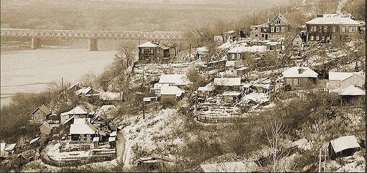
«…Крутые склоны, повисшие над Последней улицей. Что, интересно, он увидел на склоне, на котором в большом беспорядке были разбросаны деревянные дома? Ну, хибарки как хибарки! Ну, вгрызлись в известковую толщу и стоят на искусственных террасах. И лишь на самой вершине, на птичьей высоте, торчит белокупольная обсерватория. Та самая, с которой можно следить за всеми спутниками, которые пролетают над Уфой». (С. 155)
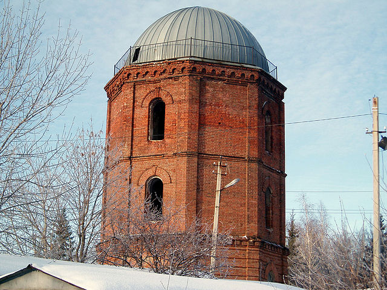
Район Телецентра – школа № 35, телевышка, мусульманское кладбище
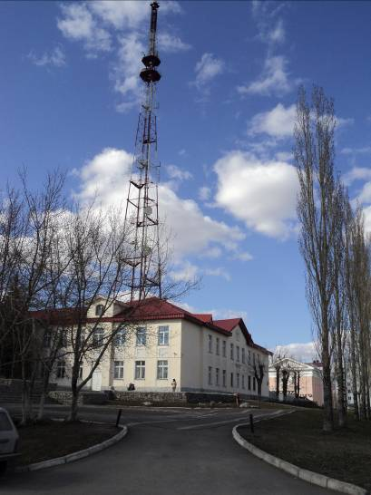
«Сперва шли крадучись вдоль берега, мимо лодок, тихо-тихо звенящих цепями. Любой шаг по шуршащей гальке отдавался по всей реке, чутко дремавшей рядом. … Внезапно по железнодорожному мосту прогрохотал пассажирский поезд, наверное, южноуральский экспресс… Возле школы – это на самой горе – передохнули. Рядом с ней – студия телевидения. Красные огоньки, словно драгоценные камни, убегали по высоченной башне куда-то ввысь». (С. 168 – 169)
«Необитаемый остров» (возле железнодорожного моста)
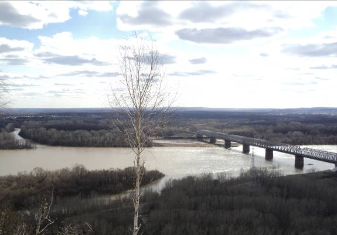
«В этой жизни не всем так везёт, как мальчишкам с последней улицы. У них имеется свой собственный необитаемый остров. …Во время разлива он остаётся под водой. Но ненадолго. Как только спадают вешние воды, неподалёку от железнодорожного моста, как раз напротив устья Дёмы, будто по волшебству возникает остров». (С. 197)«Орел умирает на лету»
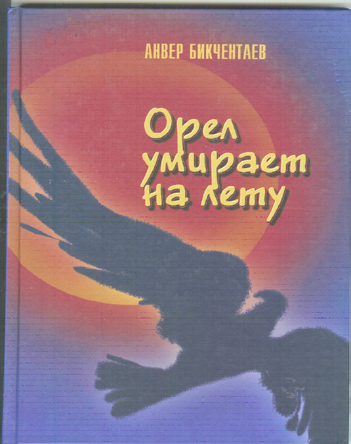
Бикчентаев А. Г. Орел умирает на лету [Текст] : повесть / А. Г. Бикчентаев; худож. С. Билалова. -Уфа : «Новый стиль», 2005. - 176 с. : ил.Откуда берутся герои? Рождаются ими или становятся? Что мы знаем о них? А если завтра война?
Повесть А.Г. Бикчентаева освещает часть короткого жизненного пути нашего земляка, Героя Советского Союза Александра Матросова, о чьём подвиге когда-то мог рассказать любой школьник. Во время атаки в боях за деревню Чернушки огонь немецкого пулемета не давал подняться в атаку нашим бойцам. И тогда Александр Матросов бросился к вражескому дзоту и закрыл своим телом амбразуру. Десятки пуль пронзили его, но пулемет умолк и солдаты с криками «Ура!» ринулись в бой. Путь к деревне был свободен. …
Так положил жизнь за Отчизну бывший трудный подросток-сирота, воспитанник Уфимской детской колонии. А в начале повести малолетка Сашка Матросов бредет под конвоем через всю ночную Уфу, от вокзала до колонии, с одной мыслью – бежать «на волю». Он ещё не знает, что впереди его ждёт настоящая большая жизнь: испытания характера и воли, труд, учёба, дружба, первая любовь, обретение силы и мужества. А потом была война…
Железнодорожный вокзал Уфы
«Поезд с грохотом промчался по Бельскому мосту, впопыхах пробежал мимо горы, усеянной весёлыми огоньками, и, тяжело вздыхая, остановился перед двухэтажным старинным зданием вокзала. …
Вместе с толпой они выбрались в город, прямо на грязную привокзальную площадь. У Саши сразу выветрились из головы все романтические бредни о городе, раскинувшемся на горе, между реками – тремя сёстрами. И в этой дыре ему предстоит коротать не одно лето!»
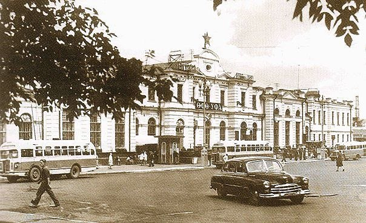
Здание железнодорожного вокзала в наши дни
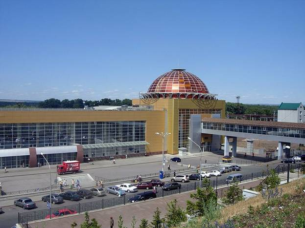
«Саша бросился наутёк. …В один приём добрался до привокзального сквера. …Он перелетел через ограду и, не оглядываясь, пошёл по слабо освещённой улице мимо длинного забора.
Тут ему на глаза попалась лестница, ведущая куда-то наверх.
… Одолев полпути или поменьше, … Саша оглянулся назад. Оглянулся и замер. Тихая красота открылась его взору: серебристой лентой тянулась река, разукрашенная красными и зелёными бакенами с переливающимися в них огнями, железнодорожные пути выглядели ещё более нарядно» (С. 20 – 21).
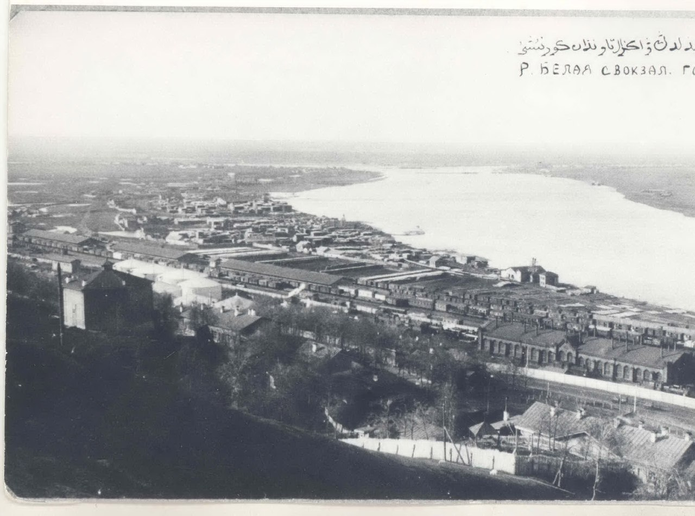
Дорога в детскую колонию
«…Шли по окраинной улице, мощённой крупным булыжником. Изредка попадались электрические фонари. Где-то на середине пути неожиданно набрели на мост, перекинутый не то через овраг, не то через маленькую речушку. Улица пошла в гору.
… - Вам придётся идти прямо, километра два, а за городом, как только пройдёте конный двор, свернёте чуточку влево, а потом снова по прямой, пока не доберётесь до деревянных складов… За теми складами ещё с полкилометра пути. А там увидите цепочку фонарей.
- Мне объяснили, что колония размещается не то в бывшем монастыре, не то в соборе… И я, увидев эту церковь, обрадовался было, подумав, что находимся у цели. А нам, оказывается, идти и идти, - вставил Басыров.
- Это Троицкая церковь, знаменитая церковь, в подвалах её сидел Салават Юлаев, ожидая допроса, - объяснил бородатый» (С. 22 – 23).
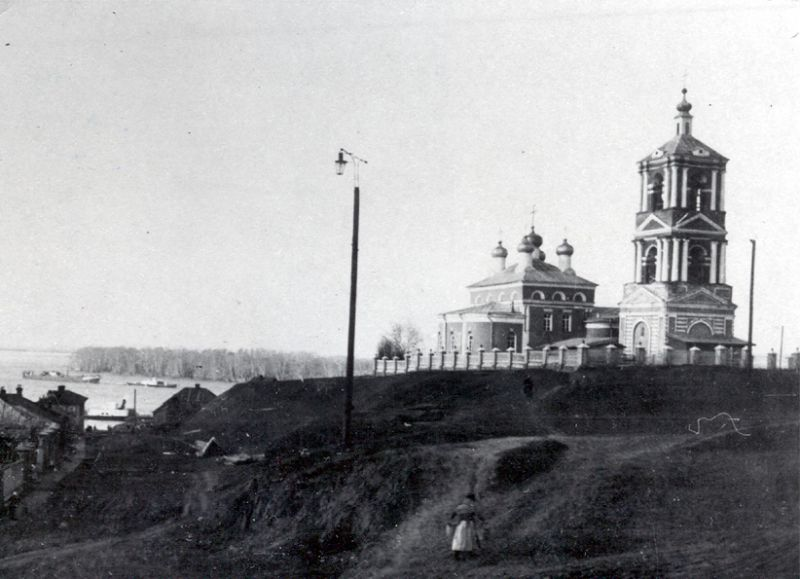
«По оврагам, через холмы, путники двинулись к долгожданной цели» (С. 23.)
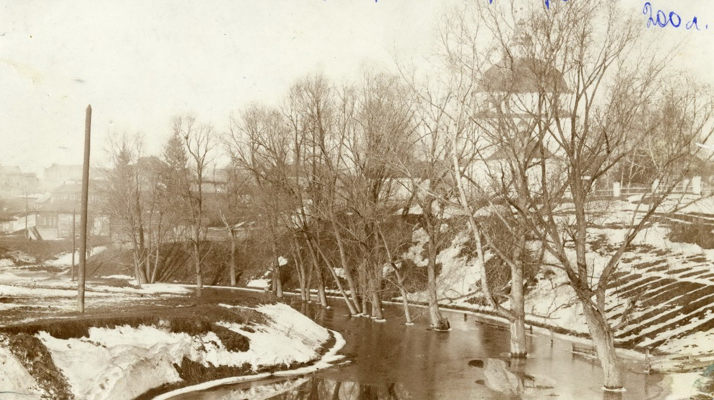
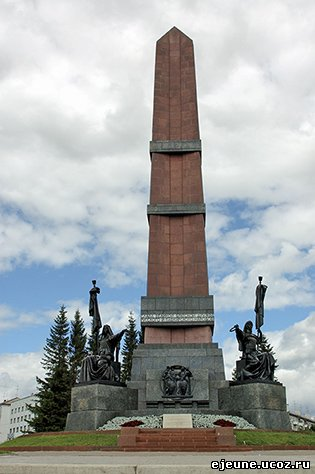
Монумент Дружбы, построенный на месте Троицкой церкви
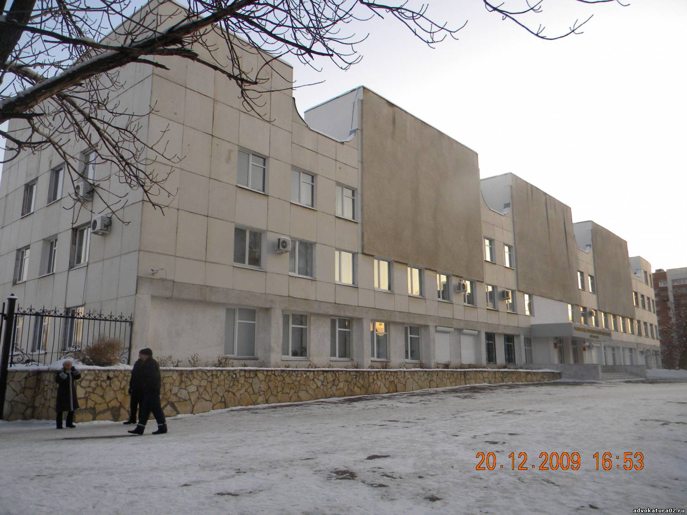
Здание Уфимского юридического института МВД России, ул. Муксинова, 2, где ранее находилась детская колония для малолетних правонарушителей.
До основания детской колонии для малолетних правонарушителей местные городские власти отдали это место под земледельческую артель «Свет», которая просуществовала до конца октября 1920 г.
В 1935 г. в Республике были учреждены 1 детский приемник-распределитель, 4 детские колонии общей численностью на 1415 несовершеннолетних. Вторая детская колония – уфимское отделение – и была будущей детской колонией им. А.М. Матросова, которая в 1935 г. будет передислоцирована на территорию закрытого Уфимского мужского монастыря.
Александр Матвеевич Матросов был воспитанником данной колонии с 1941 г. по 1942 г.
Трофим Данилович Катеренчук – старший воспитатель Уфимской трудовой колонии, участник Великой Отечественной войны, – вспоминает: «Когда враг напал на нашу землю, Саша Матросов не находил себе покоя. Сердце юноши было полно боли и гнева. Как часто говорил он своим товарищам и воспитателям: «Разве мое место здесь! Нет, я должен быть сейчас на фронте, где мои сверстники сражаются с врагом». Свой долг Саша видел в том, чтобы с оружием в руках отстаивать родную землю от наглых захватчиков».
Из личного дела колониста А.М. Матросова видно, что он родился 5 февраля 1924 г. Прибыл в Уфу 21 апреля 1941 г. Работал на мебельной фабрике слесарем. За хорошие производственные показатели и отличную учебу 15 марта 1942 г. был назначен помощником воспитателя и председателем общественной конфликтной комиссии.
23 февраля 1943 г. рядовой А.М. Матросов у деревни Чернушки совершил подвиг: ради спасения жизни своих товарищей, закрыв собою амбразуру вражеского дзота, ценой собственной жизни обеспечил победу наступающему подразделению. Он прожил всего 19 лет. Но жизнь человека измеряется не годами, а его делами. Имя Матросова стало символом бесстрашия и благородства, его бессмертный подвиг вошел золотой страницей в летопись Великой Отечественной войны.
Указом Президиума Верховного Совета СССР от 19 июня 1943 г. гвардии рядовому Александру Матвеевичу Матросову посмертно было присвоено звание Героя Советского Союза.
18 декабря 1943 г. был издан приказ народного комиссара внутренних дел Союза ССР Л. Берии за № 633 «О реорганизации Уфимской трудовой колонии несовершеннолетних, заключенных в Уфимскую трудовую воспитательную колонию имени Александра Матросова».
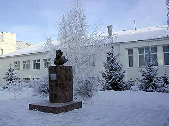
Памятник А. Матросову на территории Уфимского юридического института МВД России
Национальный музей РБ, ул. Советская, 14, где в 40-х годах находился обком.
«Красивое здание обкома, построенное архитектором в восточном стиле, с башнями, напоминающими высокие минареты, стояло на тихой улочке. Порывистый ветер гонял по тротуару почерневшие листья клёна» (Стр. 84).
Дорога в военкомат
«Габдурахманов и Матросов
с трепещущими сердцами направились военкомат. По осенней слякоти, по размытой дороге они добрались до вершины холма, с которого открывался вид на большой город. Юноши спустились по крутым переулкам старого города, прошли мост через Сутолоку, вышли на широкую улицу имени Октябрьской революции.
…Кировский райвоенкомат помещался в нижнем этаже большого каменного дома, у трамвайного кольца» (Стр. 114-115).
Прощание с Уфой (вид с Усольской сопки)
« - Гляди, Саша, всё вокруг осмотри! Вспоминать будем вместе. Белая река остаётся. Чёрная река остаётся! Помнишь, на этом острове мы купались… А там горы лежат, как киты… Давай постоим. Мне дед говорил: когда из аула уходишь в дальний путь, надо оглянуться.
На самой вершине холма, на ветру, стояли два будущих солдата, силясь унести в памяти всё, с чем расставались: каждое дерево за Белой, острова в междуречье, каждое окно бывшего монастыря, уходящую вдоль долины тропинку, по которой только что поднялись на холм…» (Стр. 124).
Воловик Михаил Яковлевич
В 1997 году на улице Сельско-Богородская, 13 была установлена мемориальная доска Михаилу Яковлевичу Воловику.
Музей М.Я. Воловика в средней общеобразовательной школе № 51
Здание школы построено в 1936 году. С 1936 по 1944 год – это была школа № 61 Сталинского района г. Черниковска, дважды завоевывавшая за высокие показатели в учебно-воспитательном процессе переходящее Красное знамя. В 1944-1954 г.г. в здании располагались две школы: женская средняя школа № 1 и мужская средняя школа № 2. 1 сентября 1955 года женскую и мужскую школы объединили в среднюю школу № 1. Когда встал вопрос о соединении двух городов Уфы и Черниковска, школу № 1 переименовали в среднюю школу № 51 г. Уфы.
За 75 лет из стен школы вышли тысячи выпускников, ставших впоследствии высококвалифицированными рабочими, мастерами, инженерами, врачами, учителями, учеными, деятелями культуры и спорта.
Музей Уфимского моторостроительного производственного объединения
Уфимское моторостроительное производственное объединение ведет отсчет от 1925 — года основания Рыбинского авиамоторного завода № 26, который в ноябре 1941 был эвакуирован в Уфу и объединился там с основанным в 1931 заводом, строившим комбайновые двигатели. До эвакуации завод выпускал ПД М-17, М-100, М-103, М-105. В годы Великой Отечественной войны Уфимский завод № 26 изготовил 97 тыс. ПД М-105 (ВК-105) и ВК-107. После войны завод освоил производство реактивных двигателей. В разные годы в конструкторском бюро завода работали В. Я. Климов, С. П. Изотов, Н. Д. Кузнецов, С. А. Гаврилов. Предприятие награждено 2 орденами Ленина (1936, 1971), орденом Красного Знамени (1945). В 1978 на основе завода образовано производственное объединение.
Злобин Степан Павлович
Здесь учился С.П. Злобин
Степан Павлович Злобин перед началом первой мировой войны приехал в Уфу к отцу, поступил учиться в реальное училище.
В Уфе реальное училище открылось в 1901 году. С 1905 года оно находилось на углу улиц Каретной и Б. Успенской (ныне перекресток Аксакова — Коммунистическая). Здание, в котором разместилось реальное училище, было очень красивое, напоминающее средневековый замок. В 1907 году в учебном заведении обучалось 228, в 1915 году — 291 человек. Значение, которое придавалось реальному училищу, определялось тем, что на преподавательскую работу приглашали учителей высокой квалификации. В 1930-е годы здание стало выше на один этаж, но внешне перемена в глаза не бросается, настолько профессионально это сделано. В настоящее время в здании бывшего реального училища размещается Башкирское производственное объединение «Прогресс».
Улица, на которой жил С. Злобин с 1924 – 1927 гг.
В Уфе С.П. Злобин поселился в доме № 38 по улице Малой Казанской, ныне — Свердлова, и прожил здесь четыре года. С Малой Казанской (улицей Свердлова она стала лишь в 1956 году после присоединения к Уфе города Черниковска) в начале XX века можно было напрямую попасть на территорию Гостиного двора.
«В площадь вливались почти все улицы, а кругом площади разместилась вся уфимская цивилизация, тянулись длинные ряды, стояли большие дома, даже в три этажа, - писал о Верхнеторговой площади врач, писатель-демократ Сергей Яковлевич Елпатьевский. - Тут были и почта, и аптека, и палаты, и Дворянское собрание…»
Часть улицы Свердлова от ворот УГАТУ до пересечения с улицей Аксакова сохранила свой более или менее первоначальный вид, а средняя ее часть: от Аксакова до Гафури, уже навсегда утратила былое очарование. Еще в середине XX века здесь располагались двухэтажные особняки, выполненные в классическом стиле, своим обликом вторящие архитектурному ансамблю Гостиного двора, от которого и начиналась улица Малая Казанская. Интенсивная застройка этого квартала была начата в конце 50-х - начале 60-х. Здесь появился студенческий городок, легла лента трамвайных путей, рядами выстроились типовые хрущевки. Позже - в начале 2000-х - выросли элитные жилые высотки.
Улица, носящая имя С. Злобина
Через девять лет после смерти Злобина, в январе 1974 года, на карте Уфы появилась улица его имени (до этого улица Черноморская). В начале 1970-х здесь было царство индивидуального жилья, но постепенно строительная техника проникла и сюда: девятиэтажные панельные дома стали расти как грибы. И если в те годы сюда можно было добраться только пешком, то с благоустройством улиц Сагита Агиша, а потом и Губайдуллина, до Злобина стал ходить общественный транспорт.
Карта памятных мест
Ибрагимов Галимджан Гирфанович
Именем Галимджана Ибрагимова названа улица в Уфе, установлена мемориальная доска на этой улице.
Бульвар Ибрагимова на карте города Уфы
Мемориальная доска Галимджану Ибрагимову на бульваре Ибрагимова
Бульвар Ибрагимова расположен в Советском районе г. Уфы. Ранее эта улица называлась «Уральский проспект». Улица очень зеленая. На ней расположены завод УЗЭМИК, молодёжный развлекательный центр «Огни Уфы», банки, Управление Бельского речного пароходства, Уфимская таможня, Биржа труда и ряд торговых комплексов.
Виды бульвара Ибрагимова
Медресе «Галия» (ул. Чернышевского, 5)
Мемориальная доска на стене медресе «Галия»
Галимджан Ибрагимов учился в медресе в 1906-1909 годах.
Работал учителем в 1915 – 1917 гг.
Киекбаев Джалиль Гиниятович
Мемориальная доска на доме, где жил Киекбаев
Видный тюрколог М.3. Закиев в своей книге о Киекбаеве "Вдохновенная песня" пишет: "Труд на благо народа, жизнь, отданная науке, навсегда остаются в памяти народа. Жизнь Джалиля Гиниятовича была песней, труд его был посвящен народу, и они долго будут жить в сердце народа".
23 октября 1981 года в Уфе, у дома № 47 по улице Ленина, состоялся митинг, посвященный открытию мемориальной доски. На ней золотом выделяются слова: "В этом доме в 1959-1968 годах жил видный ученый, лингвист и писатель Джалиль Гиниятович Киекбаев".
Улица имени Джалиля Киекбаева
Улица Киекбаева находится в Советском районе Уфы. Остановка транспорта "Аграрный университет".
Литературная карта
Киньябулатова Катиба Каримовна
В городе Уфе памятным местом является дом по адресу ул. Мубарякова, 12, где проживала Катиба Каримовна Киньябулатова. Дом не отмечен мемориальной доской.
Дом на Мубарякова 12, где проживала Катиба Киньябулатова
В 1953 году Катиба Каримовна приехала в Уфу и стала работать в редакции журнала «Эдэби Башкортостан» (ныне «Агидель»), навсегда связав свою судьбу с журналистикой, литературой.
Издательство журнала "Агидель"
Именно Катибе Киньябулатовой принадлежала идея создания журнала «Башкортостан кызы», главным редактором которого она была в течение восьми лет, с 1968 по 1975 годы.
Издательство "Башкортостан кызы", где работала Катиба Киньябулатова
Короленко Владимир Галактионович
Дом, в котором жил В. Г. Короленко
«Живу на Аксаковской, во флигеле Ярчевских…», - сообщал Короленко В.В. Брусянину. Дом находился по улице Аксакова, 49. Деревянный, одноэтажный, одноквартирный, постройки ХIХ века. Размер по улице Аксакова 12.6м. Все фасады были обшиты доской. Главный восточный фасад отличался более богатым декором. Окна были обрамлены наличниками, верхняя часть наличников оформлена резьбой. На главном фасаде дома имелись четыре окна и дверь. Над дверью – двускатный козырек с ажурным оформлением, опирающийся на деревянные кронштейны. Над главным фасадом находилось слуховое окно.
Дом не был отмечен мемориальной доской, до 2010 года в нем располагался магазин. В конце 2010 года дом был снесен. В настоящее время на этом месте строится многоэтажный жилой дом.
Улица имени В. Г. Короленко
В Уфе память о писателе В. Г. Короленко хранит улица его имени, она находится в северной части города Уфы (Черниковке). Улица небольшая. Начало улицы застроено пятиэтажными домами, вторая часть занята частным сектором. Образована улица была в 1960 году.
«Теплый солнечный июньский день. Тихие улицы Уфы благоухают запахами цветов и трав. Почти в каждом палисаднике густо зеленеют сады. Маленькие деревянные домики уютно смотрят оконцами в обрамлении ажурных наличников и распахнутых ставен. Не привлекая особого внимания редких прохожих, идет по сонной улице плотный широкогрудый мужчина. Судя по его неторопливой походке и обостренному интересу к не столь уж броским достопримечательностям, встречающимся на его пути, можно догадаться, что это приезжий. Да и одет он, кажется, не по погоде: сарпинковая рубаха синего цвета подпоясана кожаным ремнем, черные брюки заправлены в сапоги. Густая курчавая борода и богатая черная шевелюра, красиво обрамляя правильные черты лица, как бы подчеркивают зоркость и мудрость спокойных карих глаз. И от всей коренастой крепкой фигуры этого симпатичного человека веет удивительным спокойствием и уверенностью».
Таким, вероятно, больше ста лет тому назад видели уфимские жители Владимира Галактионовича Короленко.
Мажит Гафури
В Уфе много памятных мест, связанных с жизнью и творчеством классика башкирской и татарской литературы Мажита Гафури.
Имя Мажита Гафури - народного поэта Башкортостана, носит одна из уфимских улиц, уфимская средняя школа №15, парк культуры и отдыха в Уфе, пассажирский лайнер Бельского речного пароходства, Башкирский государственный академический театр драмы.
Дом-музей М. Гафури

Мемориальный Дом-музей М. Гафури - филиал Национального музея РБ в Уфе, ул. Гоголя, 28. Открыт в 1948 г. в доме, который был подарен Мажиту Гафури правительством Республики в связи с его юбилеем и присвоением ему звания Народного поэта Башкирии (1923).
Одноэтажный, деревянный дом с двумя парадными дверями и шестью окнами на улицу Гоголя. Уличный фасад удлиненный, имеется мезонин со стороны двора. Дом построен в 1860 г. и до революции принадлежал Гиневским. После Октябрьской революции он был передан под детский диспансер. Архитектура характерна для построек Уфы XIX в. Карнизы окон и крыльцо украшены резьбой по дереву. Крыша железная, скатная. Здание не перестраивалось. В комнатах дома создана мемориальная экспозиция с подлинным интерьером.
Рабочий стол | Личные вещи |

В остальных комнатах – документальная экспозиция. В 1948 г. организован Дом-музей Мажита Гафури. Тогда же была установлена металлическая литая мемориальная доска с надписью: «В этом доме с 1923 по 1934 год жил и работал народный поэт Башкирии Мажит Гафури».
В этом доме писатель прожил с 1923 по 1934 год. Здесь Мажитом Гафури были написаны повести «Черноликие», «Ступени жизни», «На золотых приисках поэта», драма «Красная звезда», либретто к опере «Труженик» по мотивам своей одноименной поэмы, многие стихотворения и рассказы.
В этот дом часто приходили писатели и поэты А. Тагиров, Д. Юлтый, Б. Ишемгул, С. Кудаш, Г. Гумер, Г. Ибрагимов, Ш. Камал, С. Кулибай, Г. Амири, Г. Салям, С. Агиш.
Мажит, его жена Зухра и сын Анвар были музыкально одаренными людьми. К 20-летию литературной деятельности Мажиту Гафури было подарено пианино, клавиш которого касались впоследствии руки Газиза Альмухаметова, Султана Габяши, Салиха Сайдашева и Загидуллы Яруллина. В доме восстановлена подлинная обстановка квартиры поэта. В фойе находится 1400 экспонатов.
Памятник Мажиту Гафури, ул. Фрунзе, 34

В Уфе на площади перед зданием Башкирского академического театра имени Мажита Гафури 18 сентября 1978 года открыт памятник основоположнику башкирской советской и татарской литературы Мажиту Гафури (Габдельмажиту Нурганиевичу Гафурову).
Памятник создан скульптором Кербелем Л. Е. и архитектором Хихлухой Л.В. Незадолго до открытия памятника, Лев Ефимович Кербель говорил:
«Я бывал несколько раз в Уфе, мне нравятся этот город, красиво и привольно раскинувшийся на огромной территории, люди…Предложение выполнить работу для Уфы я принял без сомнений. Обдумывая образ Гафури, представил себе время, в которое он жил, полнее осознал глубину произведений писателя, отразивших общественные идеи лучших людей России… Главное заключается в том, чтобы пластикой выразить благородный образ Гафури. Я не хотел поразить зрителей новизной формы, напротив, мне казалось, что, используя традиционную форму памятника в виде сидящей фигуры, можно будет попытаться раскрыть как бы изнутри образ писателя…»
По единодушному мнению специалистов, в памятнике нет сиюминутного воспроизведения, но есть точность в передаче портретного сходства, национального колорита, есть живые черты Гафури, переданные взволнованной рукой ваятеля. Блики благородной бронзы придают особую игру светотени, подчеркивая лиризм образа, сложный духовный мир писателя-гуманиста. Как бы разрушая идею возвеличивания, но сохраняя черты монументальности, скульптор делает памятник теплым, человечным, отчего проникновенный образ Гафури раскрывается в предельной обнаженности связей общественного и личного.
Народный поэт Башкортостана Мустай Карим на митинге по поводу открытия памятника сказал так: «Мы сегодня являемся участниками замечательного события, когда, воздавая дань глубокого уважения и любви первому классику нашей национальной литературы, первому народному поэту Башкирии, чествуем также свою духовную зрелость, свое социальное и нравственное возвышение».
Отливка и контрольная сборка пятиметровой скульптуры из бронзы произведена на ленинградском заводе «Монументскульптура». Скульптору удалось добиться не только портретного сходства, но и точно передать внутреннее состояние большого художника слова. Тонкое, одухотворенное лицо, выразительные руки. Пропорции частей памятника – большая фигура и относительно маленький гранитный постамент – приближают памятник к зрителю. Фигура Мажита Гафури находится на расстоянии от здания театра и в то же время сочетается как одно целое. Памятник находится в центре площади – с фонтанами, газонами, специальными светильниками.
Кербелю Л. Е. и Хихлухе за памятник Мажиту Гафури в 1979 г. присуждена республиканская премия имени Салавата Юлаева.
Башкирский государственный академический театр драмы им. М. Гафури, ул. А.-З. Валиди, 34.
Башкирский государственный академический театр драмы им. М. Гафури ордена Трудового Красного Знамени находится на улице А.-З. Валиди, 34. Основан в 1919 г. в Стерлитамаке, с 1935г. – академический. Руководил Стерлитамакской группой Вали Муртазин-Иманский. В 1922 году театр переехал в Уфу, объединился с татаро-башкирской труппой Уфимского показательного театра и работал на сцене Аксаковского народного дома.
В 20-е годы театр осваивает классическую и молодую национальную драматургию. На сцене шли драмы У. Шекспира, Н. Гоголя, А. Островского, национальных драматургов Ф. Амирхана, Ш. Камала и др.
С 1930 годов в башкирском театре идет освоение фольклорного этнографического и исторического материала. Большой успех имели драмы «Черноликие» М. Гафури, «Карлугас» Б. Бикбая.
Значительным подъемом башкирского театра характеризуется начало 60-х. Активно работают в жанре драматургии И. Абдуллин, А. Мирзагитов, Н. Асанбаев, А. Атнабаев, Р. Сафин, Ф. Богданов. Их пьесы составили ядро театрального репертуара 1960-1970-х годов.
В конце ХХ – начале XXI в. в театре проведена масштабная реконструкция здания. Ее вели уфимские строители по проекту архитекторов из Санкт-Петербурга.
Зрительный зал на 550 мест максимально комфортно спроектирован, оснащен современным лингафонным оборудованием, что позволяет слушать синхронный перевод пьес с башкирского языка на русский язык. По сторонам фойе установлены четыре лифта, поднимающие зрителей на второй этаж. Театральная сцена стала полностью управляемой, как принято в крупных зарубежных театрах. Кроме сцены, современной электроникой управляются освещение и акустика. Общие объемы здания значительно увеличились за счет строительства малого зала на 400 мест, больших помещений для актерского коллектива и театрального реквизита, хозяйственного блока.
Парк им. Мажита Гафури

Парк культуры и отдыха им. М. Гафури центральный, самый крупный в РБ (площадь 420 га). Был создан в 1961 г. на месте Уфимского городского лесхоза. В восточной стороне парка, примыкающей к площади им. Ленина, сохранились деревья и кустарники заложенного здесь в 1930-е годы дендропарка. На небольшом участке растут экзотические для местного климата орех маньчжурский, бархат амурский и около 20 других ценных древесных пород.
В 2001 – 2002 гг. в этой части парка был создан комплекс аттракционов – комната страха, площадка для электромобилей, качели и карусели различных типов. В парке работает «колесо обозрения» - единственное, оставшееся в городе.
Могила М. Гафури
Мажит Гафури умер 28 октября 1934 г. Похоронен в «Саду Свободы», ныне парк имени В. И. Ленина.
Могила Мажита Гафури находится в мемориальном комплексе. На ней – надгробная плита из серого гранита длиной 2 м, шириной 0,9м. На плите установлен обелиск из красного шлифованного гранита высотой 0, 75м, с небольшим уклоном (основание – 0,4 м, вверху – 0,3м). В центре обелиска – горельеф с изображением поэта размером 0,33м х 0,29м. Автор – скульптор М. П. Шабалтин.
Под рельефом выбита надпись: «Мажит Гафури. 1880-1934». Около могилы высажены голубые ели, разбит цветник.
Улица М. Гафури
Улица Гафури идет от Телецентра на север в сторону ул. Революционной. Первоначальное ее название – Никольская улица, в честь Никольской часовни, стоявшей неподалеку на Никольской площади на месте нынешней бензозаправки у трамвайного кольца. Часовня стояла над спуском ул. Трактовой в сторону Нижегородки в западной части Никольской площади, занимавшей большое пространство между улицами Пушкинской и Малой Казанской (ныне ул. Свердлова). По Никольской улице в часовню совершались крестные ходы для встреч и проводов чудотворных икон Казанской Божьей Матери и Святителя Николая Чудотворца.
В 1925г. по решению Уфимского горсовета в рамках антирелигиозной компании часовня была разрушена, а еще через десять лет улица была переименована в честь классика башкирской и татарской литературы, первого народного поэта Башкирии Мажита Гафури.
Мустай Карим
Созвездие Мустая на карте Уфы
«В заре весенней вижу я … мою Уфу…»
Мустай Карим
Памятные места, связанные с именем Мустая Карима, на карте Уфы отмечены синими звездочками. Памятные места, связанные с писательской деятельностью, на карте Уфы отмечены красными звездочками.

Народный поэт Башкортостана Мустай Карим – замечательный писатель, мыслитель и общественный деятель, вышел из глубин народа и воплотил его лучшие качества. Для многих поколений ХХ века именно Мустай Карим стал подлинным духовным символом Башкортостана и всей многонациональной России.
Первая сознательная встреча Мустая с Уфой – «городом на белой горе», как назвал ее писатель, состоялась в 1928 году. А в 1935 он приехал в Уфу учиться на педагогический рабфак и с тех пор, на долгие 70 лет, Уфа стала его родным городом. Отсюда поэт ушел на фронт, здесь встретил свою любовь, здесь родились и выросли его дети, внуки, и отсюда в 2005 году он ушел в Вечность…
Адреса Мустая Карима в Уфе указаны по материалам статьи «Правда ради правды»: Дневник (1996 – 1999 годы) / М. Карим // Уфа. – 2009. - №11. - С. 72-75.)
«… Начал вспоминать, в каких домах я жил в Уфе. В 1928 году ночевал у наших односельчан в доме № 113 по улице Егора Сазонова (потом ул. Сталина, сейчас – Коммунистическая)».
Дом по ул. Коммунистической, 113
Этот дом в 2011 году
«В августе 1938 года мы с Вали Нафиковым сняли комнату в квартирке с двумя маленькими комнатками, Достоевского, 37. Это был двухэтажный деревянный дом, квартирка на втором этаже. Теперь дом снесён. В том же доме в апреле 1941 года мы с Раузой поженились. Наша хозяйка Хадия-апа была родной тётей Раузы. Оттуда я ушёл на войну. После войны до сентября 1947 года оставались там же».
Многоэтажка на углу ул. Достоевского и Мустая Карима (ул. Мустая Карима, 47), где стоял домик тетушки Хадии-апы.
«В декабре 1953 года правительство выделило нам трёхкомнатную квартиру в новом доме по ул. Ленина, 65 (кв. 9)».
Ул. Ленина, 65/а
«В 1958 году первый секретарь обкома КПСС З.Н.Нуриев сказал: «Многие видные деятели культуры, литературы, когда приезжают в Уфу, бывают у тебя в гостях. Твой дом должен быть просторным». По его прямому указанию нам предоставили большую 4-комнатную квартиру. Там мы прожили ровно 40 лет. Стены той квартиры хранят голоса и ауру многих и многих моих друзей и высоких гостей. Тут были Константин Симонов, Расул Гамзатов, Чингиз Айтматов, Сабит Муканов, Кайсын Кулиев, Хасан Туфан, Давид Кугультинов, Аскад Мухтар, Зульфия, Сергей Михалков, Гумер Баширов, Абдижамил Нурпеисов, Михаил Дудин, Мирзо Турсун-заде, Дмитрий Павлычко, Геворг Эмин, Яков Ухсай, Педер Хузангай, президент Татарстана Минтимер Шаймиев, Шукрулло, Лев Николаевич Богуш (академик), целые группы татарских, украинских, чувашских, азербайджанских, горно-алтайских, ленинградских, казахских писателей. Были иностранцы, не столь знаменитые, но видные деятели культуры и литературы».
Дом по ул. Ленина 31/33, где Мустай Карим прожил 40 лет
«В январе 1999 года переехали на ул. Энгельса, 5, чтобы съехаться с семьёй Альфии… К новой квартире привыкаем медленно. Там остались 40 лет жизни, дух общения с людьми. Здесь этой атмосферы нет. Стены не обогреты, не освещены, не обласканы душами моих друзей».
Дом по ул. Энгельса, 5, где Мустай Карим жил в последние годы
Мемориальные и памятные доски
Мемориальная доска на доме по адресу: ул. Энгельса, 5, где Мустай Карим жил с 1999 года по 2005 год.
Памятная доска на доме по адресу: ул. Чернышевского, 75
23 октября 2009 года в Уфе открылась памятная доска, посвященная стихотворению Мустая Карима «Птиц выпускаю…». Автор - Наиль Байбурин, заслуженный деятель искусств РБ.
Памятная доска находится на стене дома со стороны улицы Мустая Карима по адресу: ул. Чернышевского, 75 (Торгово-развлекательный комплекс «Галерея Арт»).
Проект памятника Мустаю Кариму
Памятник Мустаю Кариму появится в Уфе на площади Дворца Профсоюзов в 30-ти метрах от улицы Мустая Карима. Кроме того, будет благоустроена территория вокруг памятника.
Главным элементом проекта является бронзовая фигура спокойно идущего и смотрящего вперед Мустая Карима. «Снятый пиджак и расстегнутый ворот рубашки усиливают образно-поэтическую ноту», - отмечают авторы проекта. Скульптура поэта расположена на переднем плане. За ним - объемно-пространственная композиция взлетающих страниц его рукописей, произведений.
- Здесь в горельефных сюжетах и рукописных текстах на башкирском и русском языках происходит раскрытие основных тем и образов творчества выдающегося поэта. Мы можем увидеть героев таких произведений, как “Не бросай огонь, Прометей!”, “Салават”, “Долгое, долгое детство” и многих других. Рукописные тексты, написанные самим поэтом, увеличены и переведены в бронзу. Вся композиция располагается в бассейне с текущей водой, которая должна символизировать непрерывное течение жизни. Благодаря такому решению, место, где установлен памятник, станет более привлекательным для отдыха в летнее время, отмечают авторы проекта.
Высота памятника шесть метров. Его установят на гранитное основание размером 4*14 метров.
На площади Дворца Профсоюзов также появятся два фонтана, цветники, новые пешеходные проекты, заменят покрытие на гранитную брусчатку и плиты разных цветов. Появиться памятник должен до 30 октября 2013 г.
Мусульманское кладбище Уфы, где похоронен Мустай Карим
Памятные места, связанные с писательской и журналистской деятельностью Мустая Карима
Мустай Карим работал и публиковался в газетах «Советская Башкирия», «Ленинец», был членом Союза писателей РБ, состоял в его Правлении. В 1958 году он представлял республиканскую литературу на выездном пленуме Союза писателей РСФСР в Уфе.
Здание по адресу: ул. Коммунистическая 43, где в середине 20 века размещалась редакция газеты «Ленинец».
Здание по адресу: ул. Карла Маркса, 25, где в середине 20 века размещалась редакция газеты «Советская Башкирия».
Здание по адресу: ул. Коммунистическая, 34, где находится Правление Союза писателей РБ.
Они носят имя Народного поэта Республики Башкортостан
Улица Мустая Карима
Бывшая ул. Социалистическая. Идет от ул. Коммунистической до ул. Революционной, между ул. Карла Маркса и ул. Ленина.
Ул. Мустая Карима, 1
Ул. Мустая Карима, 69 – Уфимский городской дом детского творчества им. В.М. Комарова.
По улице Бекетовской – Мустая Карима
Доходный дом С. Л. Сахарова на перекрестке улиц М. Карима и Коммунистической. Фото Сергея Синенко.
Улицу Театральную за Верхнеторговой площадью продолжает улица Мустая Карима – они находятся на одной линии. Протяженность улицы от начала до Дворца детского творчества имени В. М. Комарова – 1,25 км. Это пять кварталов, из которых только первый (отрезок от ул. Коммунистической до ул. Чернышевского) в определенной степени сохранил свой исторический облик. Первоначальное название улицы – Бекетовская, в честь помещицы и заводчицы Ирины Ивановны Бекетовой, построившей на свои средства после большого пожара 1819 г. целую слободу для погорельцев.
Являясь продолжением Соборной улицы, Бекетовская раньше тянулась от гостиного двора, прерывалась у СтароИвановского кладбища и Парка народной трезвости (ныне парк имени И. Якутова), и появлялась вновь, шла через всю Северную слободу в сторону Сафроновской пристани – эта часть улицы звалась Малой Бекетовской. Застроена улица была деревянными и каменными особняками, небольшими магазинчиками и лабазами. На ней выделялись доходный дом С. Л. Сахарова, дома усадьбы купцов Поповых, кинотеатр «Фурор», дома Хакимова, здание Четвертой соборной мечети, манеж С. Назирова, клуб Уфимского общества взаимного вспоможения частному служебному труду, дом М. А. Емельянова, а в конце улицы, за кладбищенской оградой – Иоанно-Предтеченская церковь.
В советское время Бекетовскую улицу переименовали в Социалистическую.
С начала 2000-х гг. улица застраивается многоэтажными зданиями, ее исторический облик полностью изменился. В 2006 г. улица была переименована в честь классика башкирской литературы, народного поэта Башкирии, Героя Социалистического Труда, лауреата Ленинской и Государственной премий Мустая Карима (Мустафы Сафича Каримова, 1919–2005).
Прогулку начнем по нечетной стороне. В угловом двухэтажном каменном доходном доме С. Л. Сахарова постройки 1870-х гг. размещаются магазины и кафе (ул. М. Карима, 1, Коммунистическая, 47). Ярославский купец Сергей Львович Сахаров оставил заметный след в истории Уфимской губернии. Он – основатель губернской почтово-ямской связи и строитель здания уфимского почтамта и телеграфа на улице Уфимской-Чернышевского.
Во дворе дома Сахарова два двухэтажных дома принадлежат религиозным мусульманским учреждениям. Помещения занимают мечеть «Хакимия», медресе имени М. Султановой и медресе «Галия» (ул. М. Карима, 3).
Следующий каменный дом А. К. Смирнова постройки начала XX в. является жилым (ул. М. Карима, 5). Эти дома в комплексе с соседними зданиями стоят на госохране как памятники истории и архитектуры.
Перед электротеатром "Фурор". Уфа. Фото 1910-х г.г.
В историческом здании сегодня разместилось "Башкирское бистро". Фото Сергея Синенко
Угловой дом на четной стороне улицы – часть усадьбы купцов Поповых. Здание хорошо знакомо уфимцам разных поколений, здесь в 1908 г. был открыт первый в Уфе постоянный «электротеатр» под названием «Фурор», вход в здание с обеих сторон украшали фигуры в стиле модерн, изображающие муз – покровительниц искусств.
С 1925 г. кинотеатр назывался «Горн», с 1936 г. – «Салават». Ныне в здании разместилось «Башкирское бистро» (д. 4).
Почти рядом с кинотеатром и одновременно с ним, на противоположной стороне Бекетовской, был построен комплекс религиозных зданий. Четвертая соборная мечеть и медресе при мечети (д. 11 и д. 11а внутри квартала) были возведены в 1907–1908 гг. на средства уфимского купца Абдулатифа Хакимова, проживавшего в доме на той же улице. Мечеть, по имени первостроителя, уфимцы называли «хакимовской», она являлась единственной в городе, имеющей два минарета высотой около 18 м. Минареты стояли на высоком трехъярусном основании и представляли собой поставленные друг на друга цилиндры разного диаметра, украшенные рельефным орнаментом.
Мечеть «Хакимия» по улице М. Карима соседствует с медресе имени М. Султановой и медресе «Галия». Фото Сергея Синенко
При Хакимовской мечети действовало общество прихожан и медресе Хакимова. В 1930 г. здание передали Башнаркомату труда «под курсы тысячников», в 1934 г. – клубу фабрики имени 8 Марта. Еще через пять лет минареты снесли, культовые элементы упразднили, в результате чего архитектурный памятник потерял свою выразительность. Была нарушена и внутренняя планировка мечети – вестибюль и молитвенные залы разделили деревянными перегородками на многочисленные комнаты и кабинеты. Впоследствии здесь разместилось диспетчерское управление «Башкирэнерго».
Расположенные рядом со зданием трансформаторы и другое электрооборудование придавали памятнику чуждые ему черты промышленной архитектуры.
В 1991 г. здания мечети и медресе вернули верующим. В здании медресе теперь находится женское подразделение Исламского института ЦДУМ России (основной корпус на ул. Чернышевского, 5, в здании бывшего медресе «Галия»). Мечеть и медресе являются памятниками архитектуры и истории.
Хакимовская мечеть
На противоположной стороне улицы расположены дома и лабазы устроителя мечети и медресе Хакимова. К ним относится главный дом усадьбы Хакимовых, в котором помещается отделение Сбербанка, а также многочисленные хозяйственные постройки и флигель во дворе (ул. М. Карима, 6). Все здания возведены в 1895–1896 гг. Эти свои владения на Бекетовской улице Хакимов подарил Мусульманскому Духовному собранию. За многочисленные заслуги попечители соборной мечети ходатайствовали о присвоении Хакимову звания почетного потомственного гражданина Уфы.
Хакимовское медресе во дворе реконструируемой соборной мечети. Фото Сергея Синенко
Далее по улице за Хакимовской усадьбой находится дом попечительства о детском приюте постройки 1880-х гг. (д. 10), его в настоящее время занимает организация «Уфаводоканал».
Следующие кварталы впечатляют своими новыми постройками, но историчность места утрачена, архитектурные памятники сохранились лишь в форме редких вкраплений. Торгово-промысловое здание постройки начала XX в., известное уфимцам раньше как «манеж С. Назирова» (д. 20) в ходе реконструкции улицы было снесено, но сохранило фасадную стену, встроенную в «Синемапарк».
Сохранен, привязан к ансамблю новой жилой застройки особняк генерала М. А. Емельянова постройки 1897–1908 гг. (д. 34). Так же как знаменитые уфимские особняки Поносовой-Молло и Лаптева, он принадлежит стилю модерн, не повторяя, впрочем, другие. Фасад дома Емельянова щедро декорирован стилизованным растительным орнаментом, тщательно продуманы фигурные навершия и балюстрады, ниша оконного проема мезонина обрамлена цветочной гирляндой.
Имя архитектора неизвестно. В послереволюционное время здесь находилась железнодорожная поликлиника, Дом ребенка, детская консультация, детский туберкулезный санаторий и, наконец, детский ревматологический санаторий. С 2003 г. здание оказалось в самом центре квартала интенсивного строительства. Старанием ряда подвижников – ревнителей уфимской старины основная его часть была сохранена, отреставрирована, вошла в комплекс новой застройки.
Гораздо печальней сложилась судьба соседнего памятника истории и архитектуры – «Вспоможенки».
Фасад здания Вспоможенки, или Дома учителя, украшала деревянная резьба разного типа, сложные ажурные узоры
В 1902–1903 гг. купцом первой гильдии А. М. Паршиным на Бекетовской был построен клуб Уфимского общества взаимного вспоможения частному служебному труду, известный уфимцам сначала как «Вспоможенка», а затем как Дом учителя (ул. Бекетовская, 40, Социалистическая, 38). Это двухэтажное деревянное здание на высоком каменном цоколе являло собой типичный образец деревянного зодчества конца XIX столетия. Удивляло оно своей эклектикой, тем, как сочетает несколько стилей разных эпох и культур: в оформлении фасада были и элементы западной готики (так называемых фахверковых домов), и элементы древнерусского зодчества, и черты классицизма. Здание, памятник истории и архитектуры, снесено пять лет назад в ходе реконструкции улицы.
На улице Бекетовской - М. Карима. Фото Сергея Синенко
Центральный офис банка «Уралсиб». Уфа. Фото Сергея Синенко
Продолжая прогулку по улице, обратим внимание на пятиэтажный жилой дом со встроенным административным этажом постройки 1955 г., выдержанный в традициях сталинского неоклассицизма (д. 45).
Доминантой этой части улицы является здание Урало-Сибирского банка (ул. Революционная, 41), известного больше как «Уралсиб», и здание 2-й Мариинской гимназии, являющееся частью банковского комплекса. На данный момент офис «Уралсиб» – самое высокое здание Уфы. В высоту имеет двадцать этажей плюс технический этаж. Особую оригинальность зданию придает волнообразная конструкция над крышей. В качестве пристроя использовано старинное двухэтажное кирпичное здание, принадлежавшее в XIX – начале XX в. 2-й Мариинской женской гимназии.
В самом конце улица упирается в здание Дворца детского творчества имени В. М. Комарова (ул. М. Карима, 69). Оно было возведено в 1958 г. как Дворец пионеров. Здание отнесено к памятникам архитектуры.
Городской Дворец пионеров, ныне Уфимский дворец детского творчества имени В. М.
По кн.: "Неторопливые прогулки" по Уфе. Уфа, 2010.
Национальный молодежный театр РБ им. Мустая Карима
16.08.2006 года было принято ПОСТАНОВЛЕНИЕ Правительства РБ N 236 «О присвоении имени Народного поэта Башкортостана Мустая Карима государственному учреждению культуры и искусства Национальный молодежный театр РБ».
Театр находится по адресу:
ул. Ленина, 62.
Башкирская гимназия № 158 им. Мустая Карима
Также в 2006 году было принято ПОСТАНОВЛЕНИЕ Правительства РБ N 245 «О присвоении имени Мустая Карима МОУ Башкирская гимназия № 158 Кировского района Городского округа город Уфа Республики Башкортостан».
Гимназия находится по адресу: ул. Загира Исмагилова, 1.
В 2008 году в гимназии впервые в столице прошли Мустаевские чтения, в которых приняли участие более 100 школьников. Призеры творческого конкурса декламировали стихи, отрывки из художественных произведений, написанных Мустафой Сафичем.
Платонов Андрей Платонович
ДОМ НА АМУРСКОЙ, № 35
Часть дома, обращенная в сторону ул. Новомостовой, где жил Платонов, нежилая. Окна пристроя дома заколочены или закрыты и со стороны улицы, и со стороны двора. Видоизменились входы-сени в обеих частях дома (ср. с рисунком внутреннего двора дома, сделанного К. Нестеренко). На рисунке сведены перепады крыш двух частей строений, на фотографиях они четко прослеживаются.
Дом на Амурской находится под угрозой сноса. Мемориальной доски нет. Ситниковы из него выехали более 30 лет назад, в конце 80-х осталась одна Татьяна Никитична Фукалова… Внучка Т.И. Ситниковой Ксения Нестеренко сделала зарисовку дома, вид со двора, окно Платоновых третье слева:
Вид Амурской улицы со стороны церкви Рождества Богородицы
Амурская, 35
Нежилая часть дома, где жил Платонов
Рахимкулов Мурат Галимович
С 1885 года семья Рахимкуловых проживает в Советском районе г. Уфы по улице Бессонова, 21 вместе с супругой Верой Михайловной, дочерью Гузель и внуками. Несколько раз в течение жизни менялись адреса местожительства в Уфе:
1. родился в частном доме на ул. Чернышевского (дом не сохранился);
2. в 1928 году семья сняла дом на углу улиц Революционной и Социалистической (сегодняшние названия улиц), дом снесен;
3. в 1945 году переехали на ул. Тукаева, в дом № 46, где жили до 60-х гг.;
4. семья Рахимкуловых получила однокомнатную квартиру на остановке транспорта «Строительная»;
5. затем переехали в 2-х комнатную на Цюрупа,91;
6. обменяли на квартиру по Гоголя, 56, где жили до 1985 года;
7. в 1985 году получили 4-х комнатную квартиру по нынешнему адресу - ул. Бессонова, 21.
Ул. Цюрупа, 91
Ул. Гоголя, 56
Ул. Бессонова, 21
Сотников Иван Владимирович
Иван Владимирович Сотников жил в Уфе по улице Калинина, дом 12 (центр Черниковки).
В газете «Истоки» в 2001 году опубликовано сообщение: «В Уфе по улице Калинина на доме № 12 установлена мемориальная доска известному русскому писателю фронтовику Ивану Сотникову».
Детская библиотека № 33
В 1970 году заведующая детской библиотеки № 33 Таисия Алексеевна Резяпова организовала встречу читателей библиотеки с писателем-фронтовиком Иваном Сотниковым. Иван Владимирович часто заходил в библиотеку поговорить с детьми и библиотекарями.
Огромное место в жизни и творчестве Ивана Владимировича занимает УМПО
Мне не помнить об этом нельзя,
И не думать об этом не вправе я.
Это наша родная земля,
Это наша с тобой биография.
В соавторстве и Михаилом Яковлевичем Воловиком Сотников пишет книгу-летопись «Наша с тобой биография» о УМПО и его трудовых коллективах.
Он пишет: «Боевому коллективу уфимских моторостроителей есть чем гордиться. История его создания, становления, развития и роста, его героические дела, способность преодолевать любые трудности, беззаветное служение Родине…ставят его в ряды самых прославленных коллективов страны.
Как в капле воды отражается огромное солнце, так и в истории одного завода можно видеть главные черты, присущие рабочим людям нашей страны. И те, кто вдохновенным трудом создают историю, могут быть уверены, что их добрые дела не будут забыты и обретут в ней достойное место».
Тухват Янаби
Улица им. Тухвата Янаби
Самая молодая улица уфимского микрорайона Сипайлово, названная в честь башкирского поэта Тухвата Янаби, красива всегда. Весной, когда появляются первые листочки, летом на ней прохладно под сенью берез и тополей. А осенью, когда золотятся кроны деревьев и шуршит под ногами опавшая листва, легко и светло думается.
Жилые дома на улице
ТЭЦ № 2
Рынок «Юрматы»
Военкомат Калининского района
Дом по улице Карла Маркса, 17/19
По словам очевидцев, Тухват Янаби каждый день выходил из второго подъезда дома № 17/19 по улице Карла Маркса и спешил на работу. В четырёхэтажном доме в квартире № 12 он жил с 1932 по 1937 год.
Дом был построен в 1928-1932 годах по проекту архитектора Лермонтова Н. Ю. Здесь жили и работали видные писатели, драматурги, поэты.
На фасаде укреплено несколько мемориальных досок. Одна из них напоминает о Тухвате Янаби.
Узиков Юрий Андреевич
Дом, где жил в последние годы Ю. Узиков

Дом печати, где Ю. Узиков работал и редактором многотиражки «Геолог Башкирии», завотделом редакции газет «Ленинец», «Вечерняя Уфа»
Здание Уфимского научного центра Российской академии наук (УНЦ РАН), где одинадцать лет проработал Ю. Узиков старшим научным сотрудником
Худайбердин Шагит Ахметович
Музей Ш.А. Худайбердина
Худайбердин жил в Уфе в доме по ул. Новомостовая, 20 (бывшей Спасской). Прожил в доме чуть более года. До 1960 года здесь жила семья Худайбердина (жена и дочь). Дом одноэтажный, деревянный, с верандой. В период проживания в доме был кабинет Шагита Ахметовича, зал, комната общего пользования, столовая.
Как установил краевед Ю. Узиков, в дореволюционное время этот дом принадлежал генерал-майору К.П. Слотову. С 1961 по 1990 год в доме располагалась детская библиотека.
24 июля 1049 года на здании установлена мемориальная доска, литая, чугунная с выпуклыми буквами. Надпись на башкирском и русском языке. Художник Ростовский А.К., скульптор Терзибашьян В.М.
В настоящее время здесь находится дом-музей Ш.А.Худайбердина.
Музей располагается в двухэтажном деревянном особняке с мезонином, являющемся историко-архитектурным памятником.
В 1923 году Правительство республики подарило дом министру внутренних дел республики Ш. Худайбердину и его семье для проживания. Здесь он прожил всего год, его жена и дочь - вплоть до 1960 года.
С 1961 года по 1991 год в доме находилась городская детская библиотека им. Ш. Худайбердина.
На основании Постановления Кабинета Министров Республики Башкортостан от 30 апреля 1996 года в этом доме был создан музей Шагита Ахметовича Худайбердина, а 10 октября 2000 года музей был открыт для посетителей как музей истории национально-государственного строительства республики (политической истории Башкортостана) с сохранением мемориальной комнаты Ш.А. Худайбердина.
Хронологически экспозиция охватывает период с начала XX века до современности. Отдельный зал музея – это мемориальная комната Ш. Худайбердина – видного государственного и партийного деятеля, писателя и публициста. Часть экспозиции посвящена дочери Ш. Худайбердина Тамаре Худайбердиной - народной артистке БАССР, заслуженной артистке РСФСР.
Третий, последний зал музея рассказывает об участниках Афганской и Чеченской войн – уроженцах Республики Башкортостан.
Ежегодно собираются материалы о лауреатах премии Шагита Худайбердина в области журналистики. Совместно с Союзом журналистов была создана выставка к 110-летию со дня рождения Ш. Худайбердина из экспонатов, подаренных музею лауреатами премии.
С 2004 года музей стал работать в новом для себя направлении. В год 15-летия вывода советских войск из Афганистана была создана выставка «Афганское эхо» при поддержке Башкирского республиканского отделения Всероссийской общественной организации ветеранов «Боевое братство» и членов семей погибших защитников Отечества. На выставке экспонируются фотографии, письма, вещи участников боевых действий в Афганистане. Данная выставка вызвала живой интерес у широкого круга посетителей. На следующий год она пополнилась материалами о событиях на Северном Кавказе и получила название «Мы на верность присягу давали…». Это направление деятельности было одобрено на ученом совете Национального музея Республики Башкортостан, и Дом-музей Ш. Худайбердина стал центром сбора материала об уроженцах Республики Башкортостан - участниках всех вооруженных конфликтов и локальных войн.
Дом по улице Новомостовой, 20 и ворота представляют большую архитектурную ценность, они несут смысловую нагрузку как архитектурный компонент древнейшей улицы города.
Памятник Ш.А. Худайбердину
Памятник Ш.А. Худайбердину был открыт 4 декабря 1981 года в сквере около Дома печати. Место выбрано неслучайно: Шагит Худайбердин был одним из зачинателей партийной и советской печати в Башкирии, видным публицистом.
Памятник представляет собой почти семиметровую цельную композицию, исполненную в граните серебристо-серого цвета. Четкие очертания гранитного постамента звучат в одном ритме с окружающей архитектурой. Невысоко поднятый над землей и приобретающий книзу форму природного камня, он несет образную нагрузку. В основе памятника лежит портретное изображение Шагита Худайбердина. Памятник Худайбердину вынесен вперед и отделен от Дома печати деревьями, что помогает создать пространство вокруг него. Памятник создан скульпторами Нечаевой Т. П., Фузеевым Б. Д., архитектором Рехмуковым Ф. И.
Улица Худайбердина
Проходит в исторической части города, параллельно ул. Пархоменко. Первоначальное название – Церковная улица. Улица была переименована в середине 20-х годов в честь партийного и государственного деятеля, публициста Шагита Ахметовича Худайбердина.
На улице сохранились деревянные постройки, в середине 60-х годов были построены жилые пятиэтажки. На этой улице расположен витаминный завод, лицей № 21, модельная детская библиотека № 7 (на пересечении с ул. Кирова).
Могила Ш. Худайбердина
Шагит Ахметович прожил очень недолгую, но яркую жизнь, Ранение и тяжелая болезнь, полученная при подавлении Кронштадского мятежа, привела к ранней смерти. Похоронен Ш. Худайбердин в г. Уфе. Его могила находится в парке имени В.И. Ленина.
На ней – надгробная плита из серого гранита длиной 2 м. На плите установлен обелиск из красного шлифованного гранита высотой 0,75 м. В центре обелиска – горельеф с изображением революционера. Автор – скульптор М.Т. Шабалтин. Около могилы посажены голубые ели и разбит цветник.
«В нашей памяти, в наших делах…»
Центральная городская детская библиотека им. Ш.А. Худайбердина
В 1927 году при Центральной массовой библиотеке областного (республиканского) Комитета профсоюзов советских торговых служащих был открыт небольшой детский сектор.
В 1928 году детский отдел реорганизовали в самостоятельную детскую библиотеку города Уфы, что стало событием республиканского масштаба.
В 1961 году библиотека сменила свой адрес. Она переехала в дом № 20 по улице Новомостовой, в котором в 1923-1924 годах жил Шагит Ахметович Худайбердин. Решением Уфимского горисполкома за огромный вклад в дело воспитания подрастающего поколения Центральной городской детской библиотеке было присвоено его имя. В течение многих лет юные читатели часто встречались с вдовой Худайбердина, Магруй Шариповной, и дочерью Тамарой – талантливой балериной, профессором Уфимского государственного института искусств.
В 1990 году решением Уфимского горисполкома библиотеке было предоставлено просторное помещение на улице Мингажева, 109, где она и работает в настоящее время.
В 1992 году Центральная городская детская библиотека первой в республике осуществляет переход к работе по программам. Программа социальной защиты детства «Солнышко» объединяет различные направления работы.
В 2000 и 2002 г.г. Центральная городская детская библиотека имени Ш. Худайбердина стала «Лучшей библиотекой столицы», а также признается победителем конкурса «Лучшая библиотека года Республики Башкортостан».
Сегодня ЦГДБ – это информационный и досуговый центр для детей и подростков столицы. В деятельность библиотеки внедряются интерактивные формы работы, новые информационные технологии. Расширяется парк компьютерной техники, созданы электронные каталоги и картотеки, есть доступ в ИНТЕРНЕТ, разработан свой сайт.
Мемориальный уголок в Центральной городской детской библиотеке им. Ш.А. Худайбердина
В 1996 году к 100-летию со дня рождения Ш.А. Худайбердина в Центральной городской детской библиотеке открывается мемориальный уголок этого выдающегося башкирского общественно-политического деятеля. На открытии экспозиции присутствовала дочь Шагита Ахметовича – Тамара Шагитовна Худайбердина, передавшая библиотеке ценные фотографии из семейного архива.
Здесь представлены фотоматериалы, литература о Ш. Худайбердине, издания ЦГДБ. К 110-летию со дня рождения Шагита Ахметовича уголок пополнился новыми материалами и приобрел современный вид.
Сотрудники библиотеки бережно относятся к сохранению памяти великого земляка. По возможности, материалы мемориального уголка пополняются новыми материалами, отслеживаются печатные издания о Ш. Худайбердине.
Для читателей библиотеки в мемориальном уголке проводятся экскурсии. Ребята знакомятся с удивительной и яркой жизнью Шагита Ахметовича.
Научно-практическая конференция, посвященная 110-летию со дня рождения Ш.А. Худайбердина «Имя, перешагнувшее время».
В конце октября 2006 года в ЦГДБ прошла городская научно-практическая конференция, посвященная 110-летию со дня рождения видного государственного и политического деятеля, писателя-публициста Шагита Ахметовича Худайбердина.
На конференцию были приглашены работники республиканских и муниципальных библиотек, а также представители городской общественности.
Открыла конференцию директор Централизованной системы детских библиотек г. Уфы Евдокимова О.Н. выступлением «Полвека с именем Ш.А. Худайбердина». Она рассказала о славном пути детской библиотеки, о страницах ее истории. Заведующая Юмагузинской библиотекой Кугарчинского района Абдрашитова З.Р. рассказала о том, как сохраняется память о Шагите Ахметовиче у него на родине, о деятельности музея, о краеведческой и поисковой работе.
О встречах с женой Ш.А. Худайбердина, Магруй Шариповной, о дружбе с известной балериной, профессором УГИИ Тамарой Худайбердиной поведала первый директор Централизованной системы детских библиотек города Уфы, заслуженный работник культуры РБ Муратова З.Г.
На конференции также выступили: доцент кафедры историко-культурного наследия БГПУ Чигрина А.И. и председатель Союза журналистов РБ, главный редактор журнала «Хэнэк» Салимов М.Ш., который рассказал о журналистах, получивших премию им. Ш.А. Худайбердина. На конференции была организована презентация электронного полнотекстового библиографического указателя. Материалы к указателю собирались из фонда периодики и фотоматериалов Центральной библиотеки, а также были любезно предоставлены мемориальным музеем Шагита Худайбердина. К юбилею Ш.А. Худайбердина был выпущен красочный буклет «Полвека с именем Ш.А. Худайбердина», оформлена книжно-иллюстративная выставка «Имя, перешагнувшее время».
Не случайно Центральная городская детская библиотека города Уфы носит имя Ш.А. Худайбердина. Его идеи, связанные с воспитательной и просветительской деятельностью, десятки лет успешно реализуются главной детской библиотекой столицы.
Шафиков Газим Газизович
Башкирский государственный университет
В 1957 году Г. Шафиков поступил в БГУ – это был первый поток студентов в год открытия университета. Еще в Башкирском госуниверситете, будучи студентом, Газим Шафиков прослыл известным поэтом и переводчиком башкирских авторов.
Телецентр (киностудия «Башкортостан») и редакция газеты «Ленинец»
Телецентр
Сразу после окончания университета Г. Шафиков был приглашен в редакцию газеты «Ленинец» и киностудию «Башкортостан» в качестве литературного консультанта, где плодотворно работал многие годы. Его статьи и книги публицистических произведений всегда вызывали широкий резонанс в обществе.
Дом печати (редакция газеты «Ленинец»)
Институт истории, языка и литературы УНЦ РАН
В 1970-1974 годах Газим Шафиков являлся научным сотрудником Института истории, языка и литературы БФ АН СССР. Он проделал огромную работу – перевел почти все башкирские эпосы на русский язык, причем, не просто перевел, а передал в поэтической форме.
Союз писателей
Республики Башкортостан
В 1977 году Газима Шафикова принимают в Союз писателей РБ. В 1981-83 гг. он обучается на высших литературных курсах в Москве при Литературном институте им. А.М. Горького С 1981 года Шафиков становится профессиональным писателем, активно пишет и публикуется в прессе.
Национальный литературный музей
Республики Башкортостан
В фондах Национального литературного музея РБ хранятся материалы, предоставленные семьей Газима Шафикова: фотографии, портрет работы А. Лутфуллина, пишущая машинка, рукописи и другие предметы.
Дом, где в последние годы
жил Газим Шафиков
Памятные места в Уфе, связанные с жизнью и творчеством Газима Шафикова